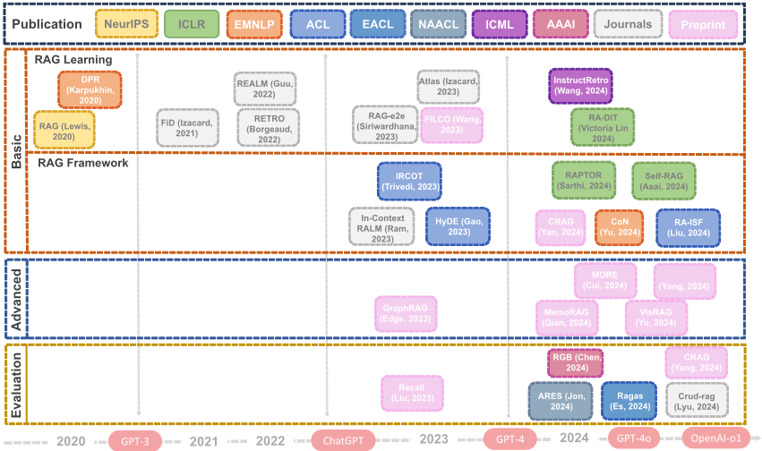
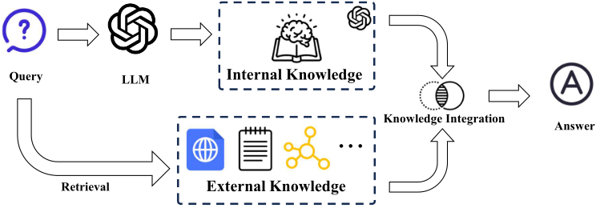
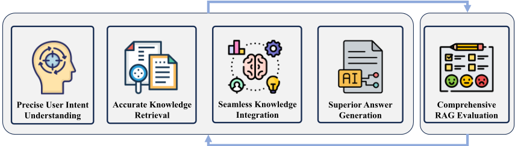
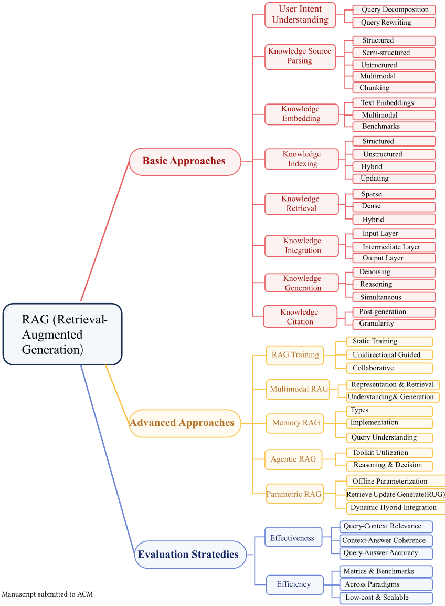
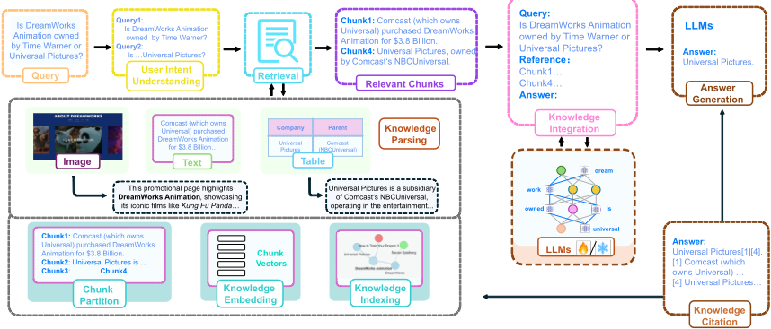
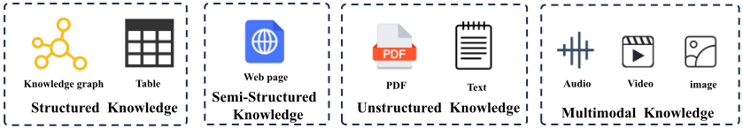
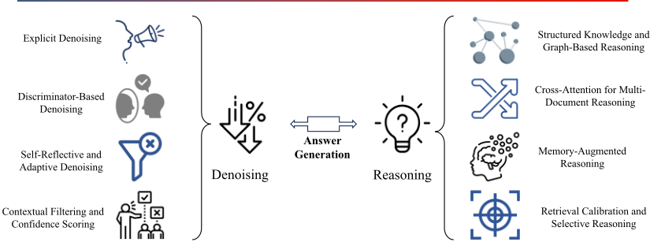
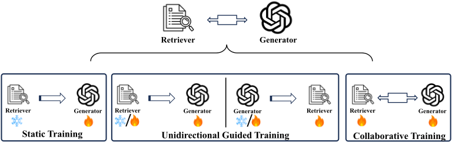
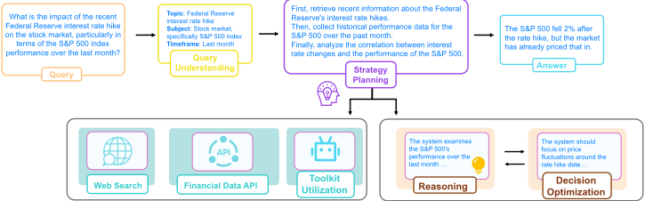

知识导向的检索增强生成（RAG）综述
这篇综述从'知识生命周期'视角系统梳理 RAG：将 RAG 视为知识识别、检索、整合与推理的多阶段过程，提出包含基础方法（意图理解、知识解析、embedding、索引、检索、整合、生成、引用）、高级方法（RAG Training、Multimodal/Memory/Agentic/Parametric RAG）与评测策略的三分支分类体系。正文逐环节对比了可落地的技术选型，如 chunking 策略、稀疏/稠密/混合检索、input/intermediate/output 三层知识整合、去噪与推理策略、引用生成方式，并整理了 RAGAS、ARES、TruLens、KILT 等评测框架及有效性/效率双维指标。关键结论包括：Parametric RAG 可将推理时间最多降低 36%；知识投毒是现有防御手段尚无法有效应对的安全风险；RAG 与长上下文 LLM 各有优势，混合架构是趋势。对以知识库问答为核心场景之一的团队，这是一份可直接对照做技术选型与评测体系设计的工程地图。
现有 RAG 综述多按模型架构或任务分类，缺乏对 RAG 本质（知识利用）的统一梳理；同时 RAG 实践面临知识选择（从大规模、噪声、多样的真实语料中识别最相关信息）、知识检索（生成时在效率与相关性间取得平衡）、知识增强 in-context 推理（检索后有效整合并推理多源知识）等核心挑战。本文旨在从知识中心视角提供覆盖基础方法、增强技术与评测的全面综述，并指出多模态知识整合、领域适配等研究缺口。
提出以知识生命周期为主线的分类法。基础方法按八阶段流水线组织：用户意图理解（query 分解与重写，如 least-to-most、Self-ask、CoVe、HyDE、Step-Back Prompting）、知识源与解析（结构化 KG/表格、半结构化 HTML、非结构化 PDF、多模态）、知识 embedding（chunk 切分与文本/多模态嵌入模型）、知识索引（向量/图/混合索引及增量更新与存储）、知识检索（稀疏/稠密/混合策略与 NNS/ANNS 搜索算法）、知识整合（input/intermediate/output 层整合及推理期的 Contrastive Decoding）、答案生成（Denoising 与 Reasoning 两类能力）、知识引用（同步生成 vs 事后检索、引用粒度演进）。高级方法包括 RAG Training（静态/单向引导/协同训练）、Multimodal RAG、Memory RAG（以显式记忆作为隐式参数记忆与原始文本工作记忆之间的中间层，如 Memory 3、MemoRAG、CAG）、Agentic RAG（查询理解与策略规划、工具包使用、推理与决策优化）与 Parametric RAG（文档参数化为 LoRA 低秩矩阵注入 FFN 层，Retrieve-Update-Generate 工作流）。评测从有效性（query-context 相关性、context-answer 一致性、query-answer 准确性）与效率（延迟、吞吐、资源利用）两个维度展开。
本文为综述，未报告原创实验的量化结果
转述引用工作：Parametric RAG 在 HotpotQA、2WikiMultihopQA、ComplexWebQuestions 等基准上推理时间最多降低 36%，同时保持或超过 in-context RAG 基线
转述引用工作：least-to-most prompting 等分解方法使 GPT-3 在 SCAN 上以极少样本达到超过 99% 的准确率
与既有综述按模型架构或任务分类不同，本文以 RAG 系统中知识的生命周期（识别、检索、整合、推理）为主线组织全部分析，强调'知识利用'这一 RAG 本质；同时补齐既有综述在多模态、图结构知识、评测方法与跨领域应用（科学、金融、医疗、法律、教育、工业）方面的覆盖缺口。
相关度级别：high
命中能力域：3.1 上下文工程与记忆 | 3.2 提示工程 | 3.3 Agent 架构与工具使用 | 3.5 评测与可靠使用
理由：团队核心场景之一是知识库问答与文档类工具，RAG 是 3.1 域明确列出的核心技术；本综述完整覆盖团队日常需要决策的工程环节：chunk 切分、embedding 与索引选型、稀疏/稠密/混合检索、检索结果与提示的整合与压缩、去噪与引用溯源，可直接作为上下文工程的选型地图。Agentic RAG 一节（查询理解与策略规划、工具包使用、推理与决策优化）对应 3.3 域的 Agent 检索规划与工具调用；第 8 节对 RAGAS/ARES/TruLens/KILT/CRAG 等评测框架与有效性/效率指标的整理直接支撑 3.5 域评测体系建设；Memory RAG 与 Trustworthy RAG（知识投毒、引用可信）分别对应 Agent 记忆与可靠性关注点；query 分解/重写等技术亦涉及 3.2 域提示方法。
建议动作：深入精读并做内部分享
arXiv:2503.10677v3 [cs.CL] 2026年7月20日
MINGYUE CHENG、YUCONG LUO、JIE OUYANG、QI LIU ∗、HUIJIE LIU、LI LI、SHUO YU、BOHOU ZHANG、JIAWEI CAO、JIE MA、DAOYU WANG 和 ENHONG CHEN，认知智能全国重点实验室，中国科学技术大学，中国
检索增强生成（Retrieval-Augmented Generation，RAG）近年来备受关注，因为它有望通过将大规模检索系统与生成式模型相结合来增强自然语言理解与生成能力。RAG 利用文档、数据库或结构化数据等外部知识源来提升模型性能，并生成更加准确、与上下文更相关的输出。本综述旨在通过考察 RAG 的基本组成部分（包括检索机制、生成过程以及二者之间的集成），对 RAG 进行全面概述。我们讨论了 RAG 的关键特性，例如其利用动态外部知识增强生成式模型的能力，以及将检索到的信息与生成目标对齐所面临的挑战。我们还提出了一种分类体系，对 RAG 方法加以归类，范围涵盖从基础的检索增强方法到融合多模态数据与推理能力的更为先进的模型。此外，我们回顾了常用于评估 RAG 系统的评测基准测试（benchmark）与数据集，并详细探讨了 RAG 在问答、摘要和信息检索等领域的应用。最后，我们重点指出了改进 RAG 系统的新兴研究方向与机遇，例如提升检索效率、模型可解释性以及面向特定领域的适配。本文最后概述了 RAG 在应对现实世界挑战方面的前景，及其推动自然语言处理进一步发展的潜力 1。
CCS 概念：· 计算方法学 → 信息抽取；自然语言生成。
附加关键词与短语：信息检索，检索增强生成，大语言模型
Mingyue Cheng, Yucong Luo, Jie Ouyang, Qi Liu, Huijie Liu, Li Li, Shuo Yu, Bohou Zhang, Jiawei Cao, Jie Ma, Daoyu Wang, 和 Enhong Chen。2018 年。《面向知识的检索增强生成综述》。载于《请务必从您的版权确认电子邮件中输入正确的会议名称》（会议缩写 'XX）论文集。ACM，美国纽约州纽约市，54 页。https: //doi.org/XXXXXXX.XXXXXXX
检索增强生成（Retrieval-Augmented Generation, RAG）[131]已成为一种将信息检索与生成模型相融合以增强自然语言处理（Natural Language Processing, NLP）任务的关键方法。通过利用外部知识源，RAG 系统能够生成更准确且更贴合上下文的输出，从而应对问答[122]、摘要生成[84]以及开放域对话等领域的复杂挑战。近年来，各种 RAG 方法被相继提出，从基础的检索增强模型到融合了多跳[204]推理与记忆增强技术[66]的更为先进的架构。这些进展凸显了 RAG 在统一框架中结合检索与生成、进而提升 NLP 系统性能的潜力。
∗ 通讯作者。
1 https://github.com/USTCAGI/Awesome-Papers-Retrieval-Augmented-Generation
作者联系信息：Mingyue Cheng；Yucong Luo；Jie Ouyang；Qi Liu, qiliuql@ustc.edu.cn；Huijie Liu；Li Li；Shuo Yu；Bohou Zhang；Jiawei Cao；Jie Ma；Daoyu Wang；Enhong Chen, cheneh@ustc.edu.cn，中国科学技术大学认知智能国家重点实验室，中国安徽省合肥市。
允许在免费的前提下制作本作品全部或部分的数字或硬拷贝供个人或课堂使用，前提是此类拷贝不得出于营利或商业优势的目的而制作或分发，且拷贝须在首页带有本声明及完整的引用信息。本作品中归作者以外各方所有的组件之版权必须得到尊重。允许注明出处的摘录。除此之外的复制、再版、在服务器上发布或重新分发至列表，均需事先获得特定许可和/或支付费用。如需申请许可，请联系 permissions@acm.org。
© 2018 版权归所有者/作者所有。出版权授权予 ACM。
1
2
检索增强生成（Retrieval-Augmented Generation, RAG）模型通过在生成过程中引入外部知识源（如文档、数据库或结构化数据）[94, 104]来增强传统语言模型。与仅依赖预训练参数的传统模型不同，RAG 系统在生成时动态检索相关信息，从而能够产生更具信息量且上下文更准确的输出。这一方法解决了传统语言模型的关键局限，例如无法访问实时或领域特定知识，并缓解了处理词汇表外或稀有实体的难题。例如，在问答任务中[61, 208]，RAG 模型从大型语料库中检索相关段落以生成更精确、信息更丰富的答案；而在摘要生成任务中[84, 184]，它们利用外部文档来提供更丰富、更全面的摘要。RAG 早期的成功已在一系列自然语言处理（NLP）应用中展现出显著改进，包括开放域问答——RAG 系统通过引入相关的外部上下文超越了传统生成式模型——以及基于文档的摘要生成——其生成的摘要能更好地反映源材料的细微差别。
RAG 的核心是一种以知识为中心的方法，它将外部知识视为改进语言生成的关键因素。通过引入相关、实时且结构化的信息，RAG 模型能够显著增强其生成上下文准确且有事实依据的内容的能力。这种以知识为中心的视角解决了传统语言模型的一个关键局限，即传统语言模型受限于其训练数据，无法访问动态或领域特定知识。外部知识的整合使 RAG 模型不仅能够检索并纳入相关细节，还能对多条信息进行推理，从而产生更细致、更有依据的输出。向知识增强的这一转变使模型能够执行更复杂的任务，例如处理专业主题[265, 267, 301]、提高对话系统中回复的相关性，以及生成能够反映源材料真正精髓的高质量摘要[84, 184]。通过管理外部知识的整个生命周期——从检索与整合到推理与生成——RAG 为那些对准确性和上下文感知能力有较高要求的应用开辟了新的可能性。
尽管检索增强生成（RAG）已取得令人瞩目的进展，但仍有若干挑战阻碍着这些模型充分发挥其潜力。其中一个主要问题是知识选择，即模型必须从海量外部信息源中有效识别出最相关的信息片段。鉴于真实世界知识语料库规模庞大、噪声众多且形式多样，这项任务尤为艰巨。另一个关键挑战是知识检索，即在生成时检索出正确的信息，同时兼顾效率与相关性。当前的检索技术往往难以将查询与知识源准确匹配，尤其是在高度专业化或存在歧义的情境中。此外，知识增强的上下文推理（in-context reasoning）也是一道重大障碍，因为模型不仅要检索到相关知识，还必须以连贯且符合上下文的方式对其进行有效整合与推理。这些挑战凸显了对 RAG 领域进行更深入理解并改进方法论的必要性，也使得一篇全面的综述成为必需，以便同时应对这一快速演进领域当前存在的局限与未来的机遇。
本综述的首要目标是从以知识为中心的视角对 RAG 进行全面概述。与现有综述通常按模型架构或任务对 RAG 方法进行分类不同，我们的独特贡献在于围绕 RAG 系统中知识的生命周期来组织分析。我们将 RAG 视为一个多阶段过程，涵盖识别、检索、整合外部信息并基于其进行推理。这种以知识为中心的视角提供了一个统一框架，将关注点从使用何种模型转移到知识如何被
Manuscript submitted to ACM
3

处理和利用，从而更清晰地理解不同技术之间的权衡。我们将介绍关键模型以及检索与生成中所采用的基本方法，深入剖析这些方法如何应对知识生命周期各阶段的独特挑战。此外，我们力求突出新兴趋势并指出现有研究中的空白，特别是需要进一步探索的领域，例如多模态知识整合[14, 23, 211]和领域特定应用[155, 180, 232, 291]。随着该领域的持续快速发展，本综述将既可作为基础性资源，也可作为未来研究的指南，为持续存在的挑战与创新机遇提供洞见。
本综述的组织结构如下，旨在通过以知识为中心的视角，对检索增强生成（RAG）进行结构化且全面的探讨。第 2 节回顾相关工作以及 RAG 的起源，第 3 节概述 RAG 流水线及其核心组件。第 4 节阐述 RAG 的基本目标与挑战。第 5 节介绍我们的分类体系，随后第 6 节和第 7 节分别介绍基础与高级 RAG 方法。第 8 节考察 RAG 系统的评估策略、基准测试（benchmark）与指标 [60, 201, 224]。第 9 节讨论下游任务与实际应用，第 10 节展望发展前景与未来研究方向。最后，第 11 节对全文进行总结。
本节为理解检索增强生成（RAG）提供必要的背景知识。我们首先追溯 RAG 的起源，探讨其自正式提出以来的演进历程与后续发展。
4
| Year | LLM | Multimodal | Graph | Advanced | Evaluation | Knowledge | |
|---|---|---|---|---|---|---|---|
| Li et al. [135] | 2022 | ✗ | ✗ | ✗ | ✗ | ✗ | ✗ |
| Gao et al. [72] | 2024 | ✓ | ✗ | ✗ | Training | ✗ | ✗ |
| Fan et al. [62] | 2024 | ✓ | ✗ | ✗ | Training,Adaptive | ✗ | ✗ |
| Huang and Huang [95] | 2024 | ✓ | ✗ | ✗ | Training,Adaptive | ✗ | ✗ |
| Wu et al. [268] | 2024 | ✓ | ✗ | ✗ | Training,Adaptive | ✗ | ✗ |
| Zhao et al. [311] | 2023 | ✓ | ✓ | ✗ | ✗ | ✗ | ✗ |
| Zhao et al. [310] | 2024 | ✓ | ✓ | ✗ | ✗ | ✗ | ✗ |
| Peng et al. [197] | 2024 | ✓ | ✗ | ✓ | ✗ | ✗ | ✗ |
| Yu et al. [290] | 2024 | ✓ | ✗ | ✗ | ✗ | ✓ | ✗ |
| (Ours) | 2025 | ✓ | ✓ | ✓ | All | ✓ | ✓ |
| | Year | LLM | Multimodal | Graph | Advanced | Evaluation | Knowledge |
随着生成式人工智能领域的持续进展，特别是在检索增强生成（RAG）领域，涌现了大量综述工作。然而，这些综述往往只关注该领域的特定方面。它们要么仅聚焦于 RAG 的某一单一基础，要么仅对有限场景下的 RAG 增强方法进行简明概述。现有大多数工作侧重于由大语言模型支持的文本相关 RAG 任务，而未深入探讨其他模态。Li 等人[135]的综述对 RAG 进行了基础性概述，并讨论了文本生成任务领域内的具体应用。Gao 等人和 Fan 等人近期的综述[62, 72, 95]在大语言模型的背景下探讨了 RAG，并特别侧重于面向查询的 RAG 增强方法。Wu 等人[268]深入研究了信息检索中的关键 RAG 技术，同时介绍了其在自然语言处理任务中的广泛应用。另有一些工作研究了更为通用的 RAG 方法。Zhao 等人近期的工作[310, 311]将 RAG 扩展到多模态场景，探索了其在更广泛的 AI 生成内容（AIGC）场景中的技术与应用。Peng 等人的另一项工作[197]考察了图结构信息如何帮助实现 RAG 中更精确且
提交至 ACM 的稿件
5

更全面的检索，增强关系知识的获取以及上下文感知响应的生成。除了聚焦于 RAG 技术相关研究之外，近来的学术研究也日益将焦点转向 RAG 系统的评估。Yu 等人[290]的综述探讨了 RAG 系统的评估挑战，提供了一体化评估框架，并考察了现有基准测试（benchmark）及其局限性。尽管涵盖了 RAG 的多个方面，现有综述仍缺乏一篇对 RAG 基础、增强方法及其在不同领域应用加以讨论的全面评述。此外，现有综述普遍忽视了 RAG 的本质，即知识利用。本文旨在通过一项系统性综述填补这一空白，以知识为中心的视角探索 RAG。
RAG 通过将检索机制融入生成流程，已成为一种强大的范式。RAG 克服了传统序列到序列（sequence-to-sequence）框架的局限性，尤其是在需要大量领域知识的场景中。本节对 RAG 进行全面概述，讨论其核心组件：从外部知识源进行检索、结合内部与外部知识进行生成，以及衔接这些要素的关键知识整合过程。
大多数生成任务都可以被概念化为从输入序列 𝒙 到输出序列 𝒚 的变换：𝒚 = 𝑓 ( 𝒙 )。然而，这一基本框架可能受限于信息不足或复杂的上下文需求。RAG 通过引入一个检索组件来应对这一局限，该组件利用相关的外部知识来丰富输入。具体而言，检索函数 𝑔 从外部知识库中提取相关信息 𝒛：𝒛 = 𝑔 ( 𝒙 )。随后，生成函数 𝑓 将输入序列 𝒙 与检索到的上下文 𝒛 相结合以产生输出：𝒚 = 𝑓 ( 𝒙 , 𝒛 ) = 𝑓 ( 𝒙 , 𝑔 ( 𝒙 ))。这一增强后的框架利用外部知识来提升生成质量，对于机器翻译和视觉问答等需要复杂上下文理解的任务尤为有益。
6
RAG 中的检索过程旨在从外部来源提供有用的知识。此类知识可能呈现多种模态，包括文本、图像、视频、音频、代码、表格等。相应地，其存储格式也多种多样，从简单的文本文件到复杂的数据库和搜索引擎均有涵盖。此外，这些知识的结构是异构的；它可能以非结构化的纯文本形式存在，也可能以半结构化的 html 数据或结构化的图数据形式存在。任何从外部知识库中获取相关信息的过程都可以被视为检索，无论知识的模态、存储格式或结构如何。
在生成过程中，生成模型融合内部知识与外部知识，将输入转化为连贯且切题的输出。无论数据格式或任务为何，生成阶段的本质在于“去噪”（Denoising）[11, 263]与“推理”（Reasoning）[253, 321]。去噪侧重于从检索到的知识中过滤掉无关或矛盾的信息，确保只有可靠且相关的信息才会影响生成过程。与此同时，推理使模型能够有效地综合来自多个来源的信息，建立逻辑关联，并产出有理有据的输出。通过对检索到的信息进行有效的“去噪”，并对多个知识源进行精细的“推理”，生成模型能够在保持输出准确性与连贯性的同时处理复杂任务。
知识集成（Knowledge Integration）在 RAG 的语境下通常被称为增强（Augmentation），它是将大语言模型（LLM）的内部知识与检索到的外部知识相整合的关键过程。这种神经符号（neural-symbolic）集成可以通过三种主要方法来实现。输入层集成（Input-Layer Integration）[98, 215] 将检索到的文档与原始查询直接拼接后再输入模型，从而能够同时处理查询与外部知识。输出层集成（Output-Layer Integration）[117] 在 logits 层面引入检索到的知识，以校准模型的最终预测，对提升输出准确性尤为有效。中间层集成（Intermediate-Layer Integration）[21] 在生成过程中将外部知识融入模型的隐藏状态，使内部与外部知识表示之间能够进行更细致的交互。每种集成策略各有优势，可根据具体的任务需求和计算约束加以选择。
RAG 模型已成为一种强大的范式，它结合了信息检索与答案生成的优势。通过利用外部知识源，RAG 模型提升了所生成内容的质量与相关性，使其在问答、摘要和对话智能体等多种应用中行之有效。然而，检索组件与生成组件的集成带来了一系列复杂的特性与挑战，必须加以解决才能充分发挥 RAG 系统的潜力。本节探讨 RAG 的关键方面，考察用户意图理解、知识检索、知识集成、答案生成和评估指标等主要组成部分，并对每个领域提供更深入的见解，如图 3 所示。
7

准确理解用户意图 [26, 162, 302] 对于 RAG 模型生成语义相关且符合上下文的响应至关重要。然而，用户查询往往含糊不清、含义隐晦，或受个性化偏好的影响，这使得意图解读颇具挑战性。细微的语言线索，如模糊的表达、非正式的措辞或依赖文化背景的指涉，会进一步遮蔽用户意图，妨碍模型提取关键信息。因此，有效的意图理解需要超越表层面的关键词匹配，转向更深层次的语义与上下文分析。
为克服这些挑战，RAG 模型必须实施融合上下文理解与语义分析的高级意图理解策略。文本建模 [1]、查询重写 [141, 167, 205] 和意图聚类 [300] 等技术可以增强大语言模型（LLM）解读用户需求的能力，从而实现更精准的检索与生成。通过持续改进这些方法，RAG 模型能够更好地契合不断演变的用户期望和领域特定需求。此外，准确的意图理解降低了产生无关或模糊响应的风险，提升了用户满意度。这反过来又强化了检索与生成两个过程，同时也为在多样而复杂的真实场景中提供灵活适应的高质量响应奠定了基础。
RAG 模型中的知识检索阶段在为生成提供相关上下文方面发挥着举足轻重的作用，直接影响最终输出的质量。高检索准确性确保能够获取最相关的知识，而高效率则可避免实时应用中的延迟。一个主要挑战在于管理大规模数据集，这需要采用先进的索引策略，例如倒排索引、近似最近邻（ANN）搜索 [10] 以及可扩展的向量表示 [76]，以保持快速访问。此外，数据源的异构性和非结构化特性要求进行稳健的预处理与归一化，以确保一致性和相关性。为进一步提升检索质量，TEKM [140] 融合了语义相似度、知识相关性和主题关联性，通过主题感知嵌入和细粒度的基于核的匹配来增强传统检索框架。
平衡精确率与召回率是另一个关键方面。高精确率可最大限度地减少无关内容的检索，从而降低生成过程中的噪声。相反，高召回率确保对相关信息的全面覆盖，这对于需要深入理解的任务至关重要。实现上述平衡通常需要对检索算法进行微调，并利用相关性反馈策略。此外，信息源具有动态特性，数据会频繁更新或扩展，这为保持检索策略的时效性和准确性带来了持续的挑战。要解决这些问题，需要持续调整和优化检索策略，以准确而有效地应对不断演变的数据集。
将检索到的知识集成到大语言模型（LLM）中是一项具有挑战性的任务，要求外部知识与 LLM 的内部知识之间实现无缝对齐 [77]。这种集成对于生成不仅在语义上相关、而且连贯且符合上下文的输出至关重要。其中一个重大挑战是确保 LLM 能够有效地解释和利用检索到的信息，而不引入不一致性或事实性错误，这就需要相应的策略，将文本块、结构化数据等多种数据类型合并为 LLM 可处理的统一表示。
此外，集成阶段必须有效管理检索到的知识与 LLM 预先存在的知识库之间可能出现的冲突。新检索到的信息与模型内部知识之间的不一致或矛盾会降低响应质量，因此需要先进的冲突解决与知识验证机制，以确保实现和谐的集成。时效相关性同样起着关键作用，尤其是在需要最新信息的应用中。因此，优先考虑最新且与上下文对齐知识的自适应集成策略，对于保持生成内容的准确性和时效性都至关重要。
在 RAG 模型中实现优质答案生成，是一项将检索到的信息与 LLM 的自然语言能力加以综合的复杂任务，以确保输出准确、相关且连贯。这种集成需要外部知识源与 LLM 内部知识之间进行精细的对齐，以减少可能导致事实不一致的潜在差异。交叉引用与验证策略 [263] 在此发挥着至关重要的作用，它们充当保障机制，帮助验证信息的准确性并防止错误信息的传播。有了这些检查机制，LLM 便能够更可靠地生成与已验证来源相一致的内容，从而增强用户对生成输出的信任。
另一个关键挑战在于保持生成文本的流畅性与自然性，尤其是在综合来自风格和结构各异的异构来源的信息时。LLM 必须无缝地整合这些输入，以生成既连贯又符合上下文的输出。实现这种连贯性需要先进的语言建模能力和强大的上下文理解能力，以有效地调和多样化的信息。此外，生成组件必须保持适应性，能够根据不同的上下文和用户意图进行动态调整。无论是提供简洁的答案、总结复杂的数据，还是进行对话，模型都应灵活地根据交流场景调整语气、风格和内容。这种能力依赖于稳健而多样的训练策略。
由于检索与生成任务的双重特性，评估 RAG 的性能面临一系列独特的挑战。传统的评估指标（如 BLEU [194] 和 ROUGE [146]）主要通过将生成文本与参考输出进行比较来衡量生成文本的质量。然而，这些指标可能无法充分反映检索组件的有效性，而检索组件在决定生成内容的相关性和准确性方面发挥着关键作用。为解决这一问题，综合评估框架必须整合两类指标：一类用于评估检索准确率，包括精确率、召回率和 F1 分数 [279]；另一类用于评估生成质量，包括连贯性、流畅性和事实准确性。
为 RAG 系统开发综合评估指标仍然是一项复杂的任务，需要在定量指标与定性判断之间取得平衡，才能对系统性能形成整体评估。使这些指标与现实场景中的用户满意度和实际效用保持一致，进一步增加了这一过程的复杂性，因为感知相关性、连贯性和有用性等主观维度难以量化，却对衡量真实有效性至关重要。引入用户研究、人工评估以及自适应的、基于反馈的指标，可以同时提升评估的准确性和上下文相关性。此外，确保指标在多样化领域和应用中的稳健性，对于保持泛化能力至关重要。最后，引用生成在验证所检索知识的可信度与可追溯性方面发挥着重要作用，进一步增强了 RAG 评估的可靠性。
RAG 系统包含许多不同的特性和挑战，贯穿意图理解、知识检索、知识整合、答案生成和评估的整个过程。每个组件都带来其自身的复杂性，从在检索中处理大规模且动态变化的数据集，到确保内容的无缝整合与高质量生成。应对这些挑战需要创新的解决方案，充分利用先进的算法、稳健的训练方法以及综合的评估框架。此外，RAG 系统中检索与生成任务相互依赖的特性，要求在系统设计与优化方面采取完整的方法，确保某一领域的改进能够相互配合以提升整体性能。在这些领域的持续研究与发展，对于提升 RAG 模型的能力具有重大前景，将催生更智能、更准确且具备上下文感知能力的生成式系统，从而满足多样化应用和行业不断演进的需求。
随着 RAG 领域的迅速扩展，涌现出了大量的方法、架构和优化技术。为了梳理这一复杂且快速演进的技术图景，并为研究人员和从业者提供清晰的参考框架，我们提出了一种 RAG 方法的分类体系。
如图 4 所示，我们的分类体系将 RAG 研究图景组织为三个核心分支：基础方法、高级方法和评估策略。基础方法涵盖 RAG 系统的核心组件以及从接收查询到生成最终带引用响应的完整工作流程，包括用户意图理解、知识源与解析、知识嵌入、知识索引、知识检索、知识整合、答案生成和知识引用。高级方法包含对基础 RAG 流水线进行扩展和增强的技术，包括 RAG 训练、多模态 RAG、记忆 RAG、智能体 RAG（agentic RAG）和参数化 RAG。评估策略从两个主要维度对 RAG 系统进行评估：有效性，通过查询-上下文相关性、上下文-答案连贯性以及查询-答案准确性来衡量生成内容的质量；以及效率，从延迟、吞吐量和资源利用率等方面衡量计算开销与响应性能。
RAG 模型利用外部知识来增强生成过程，从而能够给出更准确、更贴合上下文的回答。基础 RAG 方法由若干关键步骤组成：用户意图理解、知识来源与解析、知识嵌入、知识索引、知识检索、知识整合、答案生成和知识引用。本节将阐述这些核心组件，展示 RAG 系统如何理解用户 Manuscript submitted to ACM
10

11

查询、处理不同类型的知识、将信息转换为向量、构建搜索索引、检索相关内容、将知识与模型整合，并生成带有恰当引用的答案。
High-quality queries are essential for retrieving valuable knowledge. Since users' intentions are often ambiguous, accurately interpreting user queries is crucial for enabling more effective and precise retrieval [32, 33]. Currently, many studies focus on enhancing the understanding of user queries. This subsection primarily discusses two key methods for improving query quality: query decomposition and query rewriting.
6.1.1 Query Decomposition. Query decomposition has proven effective for enhancing the reasoning capabilities of language models, particularly in multi-step or compositional tasks. Methods such as least-to-most prompting [316] decompose complex problems into simpler subproblems, enabling strong generalization, as demonstrated by GPT-3's over 99% accuracy on SCAN with minimal examples. Self-ask [204] extends this idea by prompting models to generate and answer follow-up questions, narrowing the compositionality gap and improving multi-hop reasoning. Chainof-verification (CoVe) [50] enhances reliability by verifying intermediate results through independent fact-checking, reducing hallucinations in complex queries. Similarly, search-in-the-chain (SearChain) [277] integrates information retrieval within reasoning via a Chain-of-Query (CoQ), improving accuracy and traceability in knowledge-intensive tasks. More recently, Chain-of-Actions (CoA) [193] unifies decomposition, real-time retrieval, and verification mechanisms to further strengthen reasoning robustness in LLMs.
6.1.2 Query Rewriting. Query rewriting has become a key technique for improving RAG performance by bridging semantic gaps and enhancing retrieval accuracy. Rewrite-Retrieve-Read (RRR) [167] refines queries through an LLMbased rewriter trained with reinforcement learning, strengthening alignment between queries and target knowledge for open-domain QA and reasoning tasks. BEQUE [199] targets long-tail queries in e-commerce via supervised fine-tuning, feedback, and contrastive learning, yielding substantial business gains. HyDE [70] adopts a zero-shot strategy where an Manuscript submitted to ACM
12

LLM generates a hypothetical document for dense retrieval, outperforming traditional unsupervised methods. Step-Back Prompting [314] further enhances reasoning by abstracting high-level concepts from specific examples, improving multi-hop and knowledge-based tasks. Collectively, these approaches enhance both the precision and scalability of RAG across knowledge-intensive domains.
表格中可能包含并非显而易见的隐式关系和上下文。另一个挑战是不同领域之间表格结构的多样性，这使得开发用于表格解读的通用模型变得复杂[242]。此外，将自然语言查询转换为能够与数据库有效交互的结构化查询，需要复杂的自然语言处理技术。
近期研究通过开发创新方法来应对这些挑战。例如，TableRAG[27, 47] 利用查询扩展以及模式（schema）与单元格检索，在将信息传递给语言模型之前准确识别关键信息。这种方法能够高效处理大规模表格数据，提高了生成响应的准确性和相关性。此外，TAG[27, 47] 和 extreme-RAG[222] 等模型统一了 Text-to-SQL[280, 293, 297] 与 RAG 方法，拓宽了可处理的用户查询范围。类似地，SLR[170] 融合了内部与外部结构信号，例如文档分割和法律罪名图（legal charge graphs），以更好地捕捉冗长复杂的法律文档的语义。这些进展凸显了在 RAG 系统中利用表格数据以增强信息检索与生成能力的潜力。通过有效整合结构化数据，这些系统能够提供更精确、更具上下文相关性的响应，从而提升用户体验和满意度。
6.2.2 半结构化知识抽取。半结构化数据弥合了结构化格式与非结构化格式之间的鸿沟，将组织性元素与灵活内容结合在一起。常见的例子包括 JSON、XML、电子邮件，尤其是 HTML——它通过标签和属性对文本、图像和链接进行结构化。虽然 HTML 的混合特性使其能够表达丰富的信息，但其灵活性也带来了不一致性，使 RAG 系统中的抽取与集成变得复杂。近期研究（如 HtmlRAG [246]）探索了解析 HTML 以增强知识集成的方法，但开源解析工具对于效率和适应性而言仍然不可或缺。Beautiful Soup [219]、html5ever [231]、htmlparser2 [19]、MyHTML [22] 和 Fast HTML Parser [38] 等库将 HTML 转换为 DOM 树等结构化表示，支持高效的数据操作与检索。这些半结构化数据解析方面的进展，为将基于 Web 的内容以更高的准确性和可扩展性集成到 RAG 流水线中提供了关键基础设施。
6.2.3 非结构化知识的解析。非结构化知识涵盖了缺乏一致结构的多种数据类型，例如自由文本和 PDF 文档。与遵循预定义模式（schema）的结构化数据不同，非结构化数据的格式差异很大，且往往包含复杂内容，使得直接检索与解读颇具挑战。在这些非结构化格式中，PDF 文档在学术研究、法律文件和企业报告等知识密集型领域尤为常见。PDF 通常蕴含丰富的信息，包含文本、表格和嵌入图像等元素，但其固有的结构多变性使提取以及集成到 RAG 系统中变得复杂。
由于版式、字体和嵌入结构的多样性，PDF 解析仍然是一项复杂的挑战。要将其转换为适用于 RAG 的机器可读格式，需要光学字符识别（OCR）、版面分析，以及对表格和公式等复杂元素的解读。视觉语言模型的最新进展，例如 Levenshtein OCR [43] 和 GTR [86]，通过结合视觉与语言线索提升了 OCR 的准确率。OmniParser [257] 和 Doc-GCN [161] 等统一框架，以及 ABINet [63] 等双向 OCR 模型，进一步增强了结构保持能力与识别性能。与此同时，用于 PDF 到 Markdown 转换的开源工具已成为在 RAG 中集成非结构化数据的高效解决方案。GPTPDF [40]、Marker [196]、PDF-Extract-Kit [192]、Zerox OCR [73]、MinerU [191] 和 MarkItDown [177] 等系统提供了从表格与公式解析到版面重建和噪声清理等一系列能力。这些进展共同标志着向更精确、多模态且能保持结构的处理流水线的转变，此类流水线用于提取基于 PDF 的知识并将其集成到 RAG 系统中。
6.2.4 多模态知识的集成。多模态知识（包括图像、音频和视频）提供了丰富且互补的信息，能够显著增强 RAG 系统，尤其是对于需要深度上下文理解的任务。图像提供空间与视觉细节；音频贡献时间与语音层面的信息；而视频则结合了空间与时间两个维度，能够捕捉运动和复杂场景。传统 RAG 系统主要为文本数据而设计，往往难以处理和检索来自这些模态的信息，当非文本内容至关重要时，便会导致响应不完整或不够细致。
为了解决这些局限性，现代多模态 RAG 系统已经发展出跨各种模态整合和检索数据的基本方法。其基本思想是将不同模态对齐到共享的嵌入空间中，以实现统一的处理和检索。例如，CLIP[211] 等模型在共享空间中对齐视觉与语言，而 Wav2Vec 2.0[14] 和 CLAP[269] 等音频模型则专注于音频-文本对齐。对于视频，ViViT[7] 等基本方法能够同时处理空间特征和时间特征。这些基础性技术为更先进的多模态 RAG 应用奠定了基础，相关内容将在高级方法一节中详细讨论。
Knowledge is stored in extensive textual documents, which are first segmented into concise and meaningful units, each encapsulating a distinct core idea. These units are then transformed into vector embeddings that encode semantic information, facilitating efficient retrieval through similarity metrics. In this subsection, we introduce chunk partitioning for segmenting knowledge into meaningful units and explore multimodal embedding models, including text, images, audio, and video. Table 2 provides a summary of the corresponding models utilized in RAG.
6.3.1 Chunk Partitioning . Chunk partitioning is a fundamental process that directly influences retrieval quality and overall RAG performance [235, 294]. Its goal is to divide large texts into smaller, coherent 'chunks' for efficient retrieval and context management [256]. Effective chunking must preserve semantic coherence while minimizing redundancy and information loss. Traditional methods, such as fixed-length, rule-based, or semantic-based partitioning, are simple but often fail to capture nuanced structures or cross-paragraph dependencies, leading to fragmented context and reduced retrieval accuracy [125, 132, 158, 164, 271, 305].
Recent advances move beyond fixed-length chunking toward adaptive, semantically informed strategies. Propositionlevel chunking [29] segments text into atomic factual units, while LLM-driven approaches like LumberChunker [55] dynamically identify content shifts for context-sensitive partitioning. Meta-chunking methods [308], including Margin Sampling and Perplexity Chunking, refine boundaries to balance granularity and coherence. Late chunking [82] embeds entire documents before segmentation, preserving global context, and LeCut [169] leverages attention mechanisms to determine optimal cut points based on retrieval relevance. Collectively, these adaptive techniques enable RAG systems to handle complex document structures more effectively, improving contextual fidelity and retrieval precision.
6.3.2 Text Embedding Models. During retrieval, RAG systems rely on vector similarity measures, such as cosine similarity, between queries and text chunks, making accurate vector representation essential for capturing semantic meaning. Early approaches such as Bag of Words, N-gram, and TF-IDF considered word frequency and limited context but struggled with sparsity and high dimensionality. Modern embeddings, like word2vec [178, 179], GloVe [200], and fastText [20], introduced distributed representations capturing contextual relationships, yet remained static. The Manuscript submitted to ACM
15
| Knowledge Form | Embedding Models | Embedding Models | Dimensions |
|---|---|---|---|
| Text | Sparse Encoders | Bag of Words (BoW) N-gram TF-IDF | Size of the Vocabulary |
| Text | Traditional Dense Encoders | Word2vec[178, 179] GloVe[200] fastText[20] | Typically 100, 200, or 300 50, 100, 200, or 300 300 (Default) |
| Text | BERT Architecture Pre-training Encoders | BERT[49] RoBERTa[157] ALBERT[124] DistilBERT[226] ELECTRA[37] DPR[114] | 768 (Base) 768 (Base) 768 (Base) 768 768 (Base) 768 |
| Text | LLM-based Encoders | BGE[134] NV-Embed[127] SFR-Embedding[223] text-embedding[190] | 4096 4096 4096 768 |
| Text | Specific Domain Encoders | ru-en-RoSBERTa[237] USTORY[287] E5-Base-4k[319] | 1024 768 768 |
| Image | Vision Transformer (ViT)[54] CLIP[212] | Vision Transformer (ViT)[54] CLIP[212] | 768 (Base) 512 |
| Audio | Wav2Vec 2.0[14] CLAP[269] | Wav2Vec 2.0[14] CLAP[269] | 768 (Base) 512 |
| Video | ViViT[7] | ViViT[7] | 768 (Base) |
| Knowledge Form | Embedding Models | Embedding Models | Dimensions |
transformer architecture [255], exemplified by BERT [49] and its successors RoBERTa [157], ALBERT [124], and DPR [114], revolutionized contextual embeddings and laid the foundation for RAG's dense retrieval [131].
基于 LLM 的嵌入模型如今占据主导地位，它们利用大规模预训练来实现更深层的语义与上下文理解。BGE [134]、NV-Embed [127] 和 SFR-Embedding [223] 等模型在多语言及特定领域的基准测试中取得了领先结果。ru-en-RoSBERTa [237]、WE-iMKVec [119]、USTORY [287] 和 E5-Base-4k [319] 等领域适配变体将这些优势扩展到专门化场景，而 LLM-Embedder [304] 则通过多任务优化和 LLM 引导的监督，统一了通用检索与任务特定检索。
选择合适的嵌入模型和存储策略仍然至关重要。MTEB [182]、C-MTEB [272]、LongEmbed [319]、SEB [59] 和 AIRBench [12] 等基准测试从语言、上下文和领域等多个维度对模型进行评估，其中 AIRBench 专注于面向 RAG 的检索与重排序。在实践中，FAISS、Milvus 和 Pinecone 等向量数据库能够实现高效的相似度搜索和大规模存储，是现代 RAG 系统中可扩展、高精度检索的骨干支撑。
6.3.3 多模态嵌入模型。知识不仅以文本形式表示，还以图像、音频和视频形式表示。因此，对多模态嵌入模型的需求日益增长，这类模型将来自各种模态的信息整合到一个内聚的向量空间中。这些模型专门用于捕捉不同数据类型之间的关系和共享信息，从而实现更全面、更统一的表示。
16
对于图像，模型处理 JPG 或 PNG 等图像格式，以在与文本相同的语义向量空间中生成嵌入。Normalizer-Free ResNets（NFNet）[23] 提供了一个高效的图像特征提取框架，而 Vision Transformer（ViT）[54] 则利用 transformer 架构来学习高质量的表示。对比语言-图像预训练（Contrastive Language-Image Pretraining, CLIP）[212] 通过对比学习对齐视觉与文本模态，进一步推动了该领域的发展，为零样本分类和跨模态检索等应用生成通用嵌入。CLIP[212] 已成为现代多模态 AI 系统的基石。
对于音频，模型提取音高、音色、节奏和语义等关键特征，从而为检索任务实现有效且有意义的音频分析。Wav2Vec 2.0[14] 是一种自监督学习模型，直接从原始波形中学习音频表示，生成适用于多种音频任务的丰富的高层嵌入。受 CLIP[212] 启发，对比语言-音频预训练（Contrastive Language-Audio Pretraining, CLAP）[269] 是一种 SOTA 模型，它通过从成对的音频和文本数据中学习来生成音频嵌入，为将音频与自然语言相集成提供了统一框架。
对于视频，模型旨在将视频数据表示为紧凑且特征丰富的向量，以捕获空间、时间和语义信息。Video Vision Transformer（ViViT）[7] 基于 ViT[23]，通过同时捕获空间特征和时间特征，能够有效处理视频理解任务。VideoPrism[309] 也因在广泛的视频理解基准测试（benchmark）中取得最先进的性能而受到关注。它尤其值得注意的是，无需针对特定任务进行微调，即可在不同视频领域间实现良好的泛化。
总而言之，高质量的嵌入对于检索器的有效性和效率至关重要。近期的文本嵌入模型，如 BGE[134] 和 NV-Embed[127]，在广泛的任务中表现出色。然而，多模态 RAG 的快速发展持续催生对更优多模态嵌入模型的需求。
混合索引。在实践中，混合索引方法通常比单一索引方法更为有效，因为它整合了结构化与非结构化技术，以优化跨多种数据类型的检索 [198]。ColBERT 采用倒排索引结构快速筛选相关文档，随后利用向量索引结构计算查询与候选文档嵌入之间的相似度。这种双重方法在确保高语义准确性的同时，也实现了快速检索 [118]。
6.4.2 索引更新与存储。尽管较少被讨论，索引更新在确保 RAG 系统在引入新数据时保持准确与高效方面发挥着至关重要的作用。在实践中，索引更新通常通过两种主要方式进行：增量更新和周期性重建。其中，增量更新是指在现有索引中添加或修改条目而无需重建整个结构的过程，能够在最小化计算开销的同时高效适应不断演变的数据。这使得增量更新在持续引入新信息的动态系统中尤为有利，例如 Light RAG [78] 和 REALM [81]。
此外，索引的存储在 RAG 模型中也发挥着基础性作用，它通常受索引结构的影响，并将直接或间接地影响检索步骤的性能。对于向量索引，Chroma 采用分布式架构，可水平扩展以支持海量存储；Faiss 具有出色的相似性搜索能力，提供了优化的索引方法以高效检索最近邻 [109]；Weaviate 使用图结构进行数据存储，并集成机器学习模型以优化向量存储与搜索 [262]。对于图索引，有许多成熟的图数据库可供使用，例如以 Gremlin 作为查询语言的 JanusGraph 和 HugeGraph [5, 99]，以及规模最大、最具知名度的 Neo4j，它使用 Cypher [187]。
知识检索（Knowledge Retrieval）是基于给定查询从向量数据库中识别并获取相关知识的过程。该过程包括检索策略（retrieval strategies）和搜索方法（search methods）两个方面：前者关注如何识别相关知识，后者定义用于快速定位最相关信息的算法。
6.5.1 检索策略。检索的目标是基于输入查询识别并提取最相关的知识。具体而言，该任务通过采用相似度函数来检索 top-k 个最相关的文本块（chunk）。根据不同的相似度函数，检索策略可分为三种类型：稀疏检索（sparse retrieval）、稠密检索（dense retrieval）和混合检索（hybrid retrieval）。
稀疏检索（Sparse Retrieval）。稀疏检索策略利用稀疏向量，通过词项分析与匹配来检索文档或文本块。传统的稀疏检索策略采用诸如 BM25[220]、TFIDF[221] 和查询似然（query likelihood）[123] 等词项匹配度量，通过计算词项出现频率和逆文档频率来估计文档与查询的相关性。语言建模（language modeling）方法 [203, 298] 进一步将检索解释为估计查询由特定于文档的语言模型生成的似然，从而在传统信息检索（IR）与生成式建模之间架起了桥梁。凭借其可解释性、鲁棒性和计算效率，这些方法在 RAG 流水线中仍被广泛采用，用于初始候选选择和混合检索配置。最近，Manuscript submitted to ACM
18
| Type | Models | Deep Learning | |
|---|---|---|---|
| Retrieval Strategies | Sparse Retrieval | BM25[220] TF-IDF[221] likelihood [123] uniCOIL [147] TILDE[320] SPLADE[67] DPR [115] | × × × ✓ ✓ ✓ ✓ |
| Dense Retrieval Hybrid Retrieval | ANCE [275] Llama2vec [133] RepLLaMA [168] RAP-Gen[260] BlendedRAG[229] ReACC[160] BASHEXPLAINER[289] | ✓ ✓ ✓ ✓ ✓ ✓ ✓ | |
| Search Approaches | Nearest Neighbor Search Approximate Nearest Neighbor | Brute Force Algorithm KD Tree [17] Ball Tree [53] M-tree[36] Locality-Sensitive Hashing[3, 44] Spectral Hashing[264] Deep Hashing[151] K-means tree[248] ANNOY HNSW [172] Product Quantization[100] | × × × × × × ✓ × - × × |
| | Type | Models | Deep Learning |
一些研究探索了将 transformer 语言模型用作稀疏检索器。基于 Transformer 的稀疏检索器，例如 uniCOIL [147]、TILDE [320] 和 SPLADE [67]，通过上下文化的词项权重扩展了词袋（bag-of-words）表示，将经典稀疏方法的可扩展性与神经编码器的语义感知能力相结合，确立了稀疏检索作为现代 RAG 系统强大且高效基础的地位。
稠密检索。稠密检索策略将查询和文档一同编码到低维向量空间中，并通过二者向量表示之间的点积或余弦相似度来度量相关性。早期的神经检索架构，如 DSSM [93]、C-DSSM [234] 和 KNRM [274]，通过利用前馈、卷积或基于交互的机制，首次证明了神经文本匹配的可行性。这些模型启发了双编码器架构的发展，例如 DPR [115] 和 ANCE [275]，它们采用 transformer 编码器和对比目标来对齐查询与文档。通过大规模预训练和难负例挖掘，稠密检索器获得了强大的语义泛化能力。近期研究将稠密检索拓展至大语言模型（LLMs）时代。凭借其卓越的上下文推理能力和表示能力，LLMs 使判别式嵌入生成与自适应检索优化成为可能 [133, 168, 181, 186, 306]。例如，Llama2Vec [133] 引入无监督嵌入对齐，使预训练 LLMs 适配检索任务，而 RepLLaMA [168] 则对 LLaMA 进行微调，以实现长文档编码和高效检索。此外，RepCONC [300] 和 JPQ [299] 等学习型向量量化与压缩方法在不影响检索质量的前提下进一步提升了可扩展性。稿件已提交至 ACM
19
总体而言，稠密检索已从早期神经架构演进到基于 LLM 的嵌入，通过衔接深度语义理解与可扩展的知识访问，构成了现代 RAG 流水线的关键组成部分。
混合检索。混合检索策略将稀疏检索与稠密检索技术相结合，旨在通过发挥各自方法的优势来优化性能。RAP-Gen[260] 和 BlendedRAG[229] 将传统的关键词匹配与深度语义理解相集成，使系统能够受益于稀疏检索的高效性，同时通过稠密表示捕获更深层的上下文。BASHEXPLAINER[289] 采用两阶段训练策略，首先利用稠密检索器捕获语义信息，随后使用稀疏检索器获取词汇信息，从而实现了性能良好的自动代码注释生成。这种双重策略克服了每种单一方法各自的局限性；例如，稀疏策略可能难以应对语义上的细微差别，而稠密策略的计算开销可能较高。通过发挥两者的优势，混合模型在各种任务中提升了检索的准确性与相关性。
6.5.2 搜索方法。搜索方法是指为给定查询向量从向量数据库中高效识别相似向量而设计的算法。搜索方法可分为两类：最近邻搜索（Nearest Neighbor Search, NNS）和近似最近邻搜索（Approximate Nearest Neighbor Search, ANNS）。NNS 旨在给定集合中找到与查询向量最接近（或最相似）的向量，而 ANNS 是 NNS 的一种变体，允许搜索结果中存在可控程度的误差或近似[83]。
最近邻搜索。NNS 的暴力算法是一种简单直接的算法，它穷举扫描数据库中的所有向量，计算其与查询向量的距离，从而找出最接近的向量。然而，这种方法计算开销高昂，对于大规模数据集并不实用。为缓解这一局限，研究者引入了基于树的方法以提升搜索效率。例如，Bentley[17] 提出了一种基于 k-d 树的方法，该方法递归地将 k 维空间划分为超矩形区域，同时改善了数据组织与搜索速度。其他基于树的结构，如 Ball-tree[53, 154, 189]、R-tree[79] 和 M-tree[36]，也已被用于增强最近邻搜索，它们通过将数据划分为超球体、矩形或度量空间等各种结构来提升搜索性能，尤其在高维和复杂数据集中效果显著。
近似最近邻搜索（Approximate Nearest Neighbor Search, ANNS）。ANNS 在准确性、速度和内存效率之间取得平衡，使其在大规模和高维数据场景中尤为有用 [83]。这类方法包括基于哈希的方法、基于树的方法、基于图的方法以及基于量化的方法。基于哈希的方法，例如局部敏感哈希（Locality-Sensitive Hashing）[3, 44]、谱哈希（Spectral Hashing）[264] 和深度哈希（Deep Hashing）[151]，将高维向量转换为二进制编码，从而优化内存使用并加速搜索操作。例如，Deep Hashing [151] 利用深度神经网络学习哈希函数，将高维向量映射为二进制编码，同时保留相似数据之间的语义关系。基于树的 ANNS 方法，包括 K-means tree [248] 和 ANNOY)，以层次化方式组织数据，通过高效遍历树结构来缩小搜索空间。这些方法将数据集划分为多个分区或簇，使得搜索过程中只需探索相关区域。基于图的方法，例如分层可导航小世界（Hierarchical Navigable Small World, HNSW）[172]，通过反映数据点之间邻近关系的边将数据点连接起来，从而能够通过在图中导航实现快速最近邻搜索。最后，基于量化的方法，例如乘积量化（Product Quantization）[100]，旨在通过将向量量化到更小的码本中来压缩数据，从而在搜索速度与准确性之间保持良好平衡的同时降低内存需求。总体而言，这些多样化的 ANNS 方法为大规模、高维数据集中的快速高效最近邻搜索提供了强大的解决方案，每种方法在准确性、速度和内存使用方面各有权衡。
20
知识融合（Knowledge Integration）是将检索到的外部知识与生成器的内部知识相融合，以提升输出准确性与连贯性的过程。为这一融合所选择的方法是检索增强生成（RAG）架构中的一个关键设计决策，不同的策略在模型侵入性、计算复杂度和表示能力之间提供了各自不同的权衡。这些策略可以大致按照融合发生的架构阶段进行分类：输入层、中间层或输出层。
输入层融合。在输入层进行知识融合是最直接且与模型无关的方法，它对提供给生成器的初始上下文进行增强。这些技术可以根据其作用于原始文本还是特征表示来加以区分。
文本级融合是最基础的方法，通常是将检索得到的 top-k 文档与原始查询直接拼接。然而，这种简单的方法可能引入噪声，并且可能超出模型的上下文窗口。为了解决这些局限性，后续研究集中于对拼接后的上下文进行精炼。一些方法专注于通过重排序文本块以优先呈现最相关的内容 [75, 137]，或通过应用加权过滤技术去除无关信息 [6, 163] 来提升信号质量。另一些方法则通过压缩上下文来应对输入长度约束，从而使模型能够在固定的窗口大小内处理更多信息 [103, 108, 152, 276]。这些压缩技术旨在减少 token 数量的同时保留关键信息，从而促进更高效的生成。
与操作原始文本不同，特征级融合作用于查询和检索文档的编码表示。该方法在将两种输入送入模型之前，先将它们转换为稠密或稀疏向量 [45, 97]。通过在特征空间中进行操作，这种方法为外部知识与原始输入的结合方式提供了更灵活、更细粒度的控制，超越了简单的文本拼接。
中间层融合。一种更为深度集成的方法是将外部知识直接注入生成器的隐藏层，使模型在生成过程中能够以检索到的信息为条件来调整其内部表示。这种方法需要对架构进行修改，从而导致系统耦合更加紧密。
该类别中的一种主导策略是使用注意力机制。例如，RETRO 模型 [21] 便是典型代表，它引入了一个专用的交叉注意力（cross-attention）模块，在每一层将检索到的信息与模型的中间表示进行融合。基于类似的原理，其他模型引入了专门的记忆结构。TOME [46] 采用 Mention Memory 来存储和检索实体表示，而 LongMem [46] 则利用自适应残差网络来高效访问长期记忆。这些基于注意力的方法提供了强大且具备上下文感知能力的融合机制，但代价是计算复杂度的增加。
作为注意力机制的一种更轻量级的替代方案，其他方法通过简单的加权相加来融入知识 [66]。这些技术为 top-k 检索文档的嵌入（embedding）学习一个权重，然后将这些加权后的嵌入求和并注入模型的中间层。这为中间融合提供了一种计算成本更低的解决方案，尽管它可能缺乏交叉注意力所具有的那种动态的、词元级别的特异性。
输出层集成（Output Layer Integration）。侵入性最小的集成策略是在 logit 层面融入知识，从而修改模型的最终输出分布。这种后处理方法使外部知识能够直接影响最终的词元概率，而无需改变核心生成器架构。
该方法的一个分支是基于集成（ensemble）的融合，它将模型自身的输出分布与由检索到的近邻所导出的分布相结合。最典型的例子是 kNN-LM [116]，它将来自外部数据存储的 k 近邻概率与语言模型自身的预测进行插值。这在决策时刻有效地拓宽了模型的知识范围，从而提升了泛化能力和鲁棒性。
第二个分支是基于校准（calibration）的融合，它利用检索到的知识不仅是作为补充，更是为了对模型的预测置信度进行修正。这些方法并非采用简单的插值，而是利用基于检索的 logit 来调整或校准模型的输出。这一技术体现在用于机器翻译的置信度增强 kNN-MT [102]、用于代码摘要的 EDITSUM [138] 以及用于图像描述生成的 MA [64] 中。这些方法将外部信息用作对生成器最终预测的一种验证或纠正手段。
对比解码作为事后集成。除了基于集成与校准的策略之外，近期研究还探索了一种新颖的推理时方法，称为对比解码（Contrastive Decoding, CD），它提供了一种有原则的机制，能够在无需额外训练的情况下平衡语言模型的内部（参数化）知识与外部（检索）知识 [236, 313]。与对概率分布进行线性插值的传统输出层融合不同，CD 显式地对比模型在两种不同条件下的 token 级似然：有检索上下文与无检索上下文。形式上，解码步 𝑡 处调整后的输出概率可表示为：
其中 𝛼 控制对比调整的程度。这一公式有效地惩罚偏离外部证据的生成路径，有助于在知识冲突场景中缓解幻觉与事实性错误。
在此基础上，[313] 提出了一种多输入扩展，将相关检索与不相关检索同时整合进来，促使模型区分支持性证据与误导性证据。这类对比式公式可以被视为一种事后的、logit 级的知识对齐机制，能够根据上下文可靠性动态校准生成器的输出分布。
从知识集成的角度来看，对比解码是对上文讨论的无缝知识融合目标的补充。二者都旨在调和模型内部与外部知识源之间的差异；然而，大多数集成策略需要修改模型表示或架构，而 CD 则完全在推理时运行。因此，它提供了一种轻量而有效的手段，无需修改架构或重新训练即可在 RAG 中实现事实一致性与冲突消解。
RAG 系统中的生成组件充当最终的合成引擎，负责产出既准确又与上下文相关的响应。其性能取决于两项核心能力：过滤检索到的无关或矛盾数据（去噪，Denoising），以及综合信息以形成连贯整体（推理，Reasoning）。这些能力的选择与实现高度依赖于目标应用，体现了对检索知识的忠实度与模型自身生成能力之间的权衡。本节考察去噪与推理的不同策略如何适配各种模型与任务，以提升生成质量。
6.7.1 去噪。去噪是实现高质量生成的关键前提条件，因为它能够减轻无关或矛盾信息的影响。具体的去噪策略通常取决于任务对噪声的容忍度，以及核心语言模型是否可以被修改。这些技术可以按其介入点进行分类：显式的、由模型驱动的过滤；使用外部判别器模型；迭代式自我纠错；或简单的基于置信度的预过滤。
22

显式去噪技术。一种强大但计算开销较大的方法是利用 LLM 本身，通过显式监督来进行去噪。对于需要高可解释性的任务，InstructRAG [263] 指示模型生成中间推理依据（rationales），这些依据通过阐明每个文档的相关性而起到过滤作用。类似地，REFEED 框架 [295] 非常适合事实核查类应用，它采用迭代循环，由 LLM 通过重新评估事实准确性来精炼答案。对于上下文可能充满噪声的对话式任务，COTED [174] 等方法应用对比学习对无关的对话轮次进行去噪，在低数据场景中被证明是有效的。
基于判别器的去噪。作为利用生成器进行过滤的替代方案，基于判别器的方法将这一任务外包给一个独立的专用模型。这在生产系统中尤为有用，因为此类系统在最终生成阶段之前需要一个标准化的质量门。例如，COMBO 框架 [307] 采用预训练的判别器来评估生成段落与检索段落所构成段落对的一致性，确保矛盾信息被过滤掉，从而将幻觉降至最低。
自反思与自适应去噪。一种更具动态性和自适应性的策略是赋予模型批判并修订自身输出的能力。Self-RAG [11] 通过引入自反思机制体现了这一思路，使模型能够处理复杂度各异、信息相关性并非一目了然的查询。MetaRAG [318] 进一步扩展了这种内省能力，它融合了元认知来帮助模型规划和评估其响应策略。这些方法最适用于固定过滤策略难以胜任的复杂、开放式任务。自适应检索策略 [101] 对此形成了补充，它允许模型根据任务动态调整检索范围，如图 7 所示。
上下文过滤与置信度评分。最轻量、与模型无关的方法是基于置信度分数进行预过滤。模型根据检索到的文档与查询的匹配程度为其打分，并在整合之前丢弃低置信度的文档 [188]。这种方法非常高效，对于开放域问答尤其有价值，因为在这类任务中检索质量参差不齐，快速且可扩展的过滤方法至关重要。
这些去噪方法构成了一系列策略谱系，从适用于实时应用的轻量级预过滤，到为高风险、复杂推理任务设计的计算密集型自我纠错循环。
23
6.7.2 推理。一旦分离出高质量信息，生成器就必须对其进行综合。有效的推理使模型能够关联彼此分散的事实、理解复杂的关系，并生成超越各部分简单相加的答案。合适的推理策略取决于任务的性质：是需要在结构化关系中进行导航、综合长篇文本，还是执行多步逻辑推理。
结构化知识与基于图的推理。对于实体及其关系定义明确的领域（例如科学文献或企业知识库），整合结构化知识能够提供强大的推理骨干。Think-on-Graph 2.0 [165] 将知识图谱与非结构化文本结合使用，使模型能够执行仅凭文本难以推断的复杂关系推理。这对于专家系统或任何需要深层领域特定知识的任务而言都是理想选择。
面向多文档推理的交叉注意力。与依赖既有结构的方法不同，交叉注意力机制使模型能够在非结构化文本中动态发现关联。这种架构设计对于开放域综合任务尤为有效，例如从多篇文章生成摘要。RETRO 模型 [21] 采用分块交叉注意力（chunked cross-attention）来关注检索到的各个分块中的相关信息，而基于 kNN 的方法 [116] 则利用注意力来整合邻域信息，从而实现跨文档的流畅推理。
记忆增强推理。对于需要纵向一致性的任务，例如对话式 AI 或人物传记摘要，记忆增强模型至关重要。EAE [66] 和 TOME [46] 等模型集成了存储与检索信息的实体专用记忆模块，使模型能够在长上下文中保持对某一实体的连贯理解。
检索校准与选择性推理。更高级的推理形式涉及让模型学习*哪些*检索到的信息对当前任务最为关键。检索校准技术 [106] 训练模型优先关注某些事实，这对于聚焦式问答至关重要，因为在聚焦式问答中，某一条关键信息可能被埋没在相关性较低的细节之中。选择性推理框架 [13] 则更进一步，使模型能够分阶段评估信息，模拟更接近人类的斟酌过程。
分层与多遍推理。复杂查询通常需要无法在单遍处理中解决的多步推理。分层或多遍推理模型 [209] 通过迭代处理信息来应对这一挑战。这一策略对于涉及因果链的任务（例如关于某一事件经济后果的问题）或对比分析而言不可或缺，它使模型能够通过结合新信息重新审视证据，从而构建分层式的理解。在 RAG 系统中，此类推理可以将初始查询分解为子问题，为每个中间步骤检索证据，并基于部分结论改进后续检索。
总体而言，去噪与推理技术的选择决定了 RAG 模型的能力及其对不同应用的适用性。去噪确保信息的保真度，而推理则提供分析深度。未来的进展可能会聚焦于更紧密地整合这些过程，打造不仅准确、而且能够在复杂现实场景中进行自主且稳健推理的 RAG 系统。
RAG 中的引用对于确保模型响应的透明性、可信度与事实依据至关重要。通过将生成内容归因于可验证的来源，引用使用户能够轻松验证信息，降低了论断核查的负担，并改进了评估过程。此外，有效的引用有助于缓解幻觉，增强模型输出的事实完整性。在本小节中，我们介绍在 RAG 中生成引用的策略，并探讨引用粒度的演进。
24
6.8.1 引用生成策略。在语言模型中生成引用主要有两种策略：同步引用生成与生成后引用检索。同步生成被 WebGPT[183]、GopherCite[176] 和 RECLAIM[270] 等模型采用，它在响应生成过程中实时检索信息。这种方法确保答案与引用紧密对齐，减少幻觉并提高事实准确性。相比之下，生成后引用被 RARR[69] 和 LaMDA[250] 等模型采用，即先生成答案，之后再检索引用。虽然这种方法降低了计算复杂度，但由于答案的生成独立于引用，它增加了响应与所引来源之间出现不一致的风险。两种方法各有独特优势：同步生成提供更强的事实依据，而生成后引用则在响应生成方面具有更大的灵活性。
6.8.2 引用粒度的进展。引用粒度，即引用的详细程度，在近期的模型中已得到显著提升。LaMDA 等早期系统采用粗粒度的参考来源，通常引用整篇文档或 URL，这虽然有助于提供事实依据，却迫使用户在无关信息中筛选。WebGPT、WebBrain [207] 和 GopherCite 等模型已向细粒度引用迈进，它们检索特定的证据片段或解读长文档，以支持单个论断。RECLAIM 则体现了最高的粒度，将每个论断链接到来源中的确切句子。类似地，LongCite [303] 提出了 CoF（Coarse to Fine），这是一种利用现有大语言模型（LLM）生成精确句子级引用的流水线。Think&Cite 将基于归因的句子生成形式化为一个多跳推理问题，并通过 Self-Guided Monte Carlo tree search [136] 求解。这一进展通过减少用户的操作负担并确保信息易于溯源，提高了事实核查的效率。
高级 RAG 方法（定义为超越基础 RAG 模型的方法）涵盖了一系列旨在克服基础 RAG 系统局限性的前沿技术。这些方法旨在从多个维度增强 RAG 系统，包括训练优化、多模态处理、记忆增强、智能体推理以及参数级知识融合。具体而言，本节深入探讨五项关键进展：RAG 训练（RAG Training），专注于提升检索与生成之间的协同；多模态 RAG（Multimodal RAG），融合多种感官模态以丰富输出；记忆 RAG（Memory RAG），引入长期记忆以改善上下文推理和个性化；智能体 RAG（Agentic RAG），引入迭代式动态优化机制以应对不断演变的信息需求；以及参数化 RAG（Parametric RAG），将检索到的知识融入模型参数，以减少在线计算并提升推理效率。这些方法共同拓展了 RAG 的能力，使其能够应对复杂、动态和专业化任务。
训练 RAG 模型需要平衡检索与生成两个组件的优化，以达到最优性能。有效的训练策略能够确保检索器获取相关信息，同时生成器产生连贯且准确的输出。本节综述了 RAG 训练中的多种方法，包括静态训练、单向引导训练和协同训练，如图 8 所示。每种方法都具有各自的优势与挑战，会影响 RAG 模型在不同应用中的有效性与适应性。通过探索这些范式，我们可以增强检索与生成过程的融合，最终提升 RAG 的性能。
7.1.1 静态训练。静态优化训练是一种简单而有效的方法，即在训练过程中将检索器或生成器之一保持固定，从而使优化专注于另一个组件。该方法在资源有限 稿件提交至 ACM
25

或需要快速部署时非常有用。例如，固定检索器而优化生成器，可以使系统受益于 BM25 [220] 等成熟的检索方法或 BERT [48] 等预训练模型，而无需承担联合训练的开销。这带来了更快的训练周期和更低的资源消耗。然而，其主要缺点是可能丧失协同效应。由于仅优化一个组件，检索与生成之间的交互可能无法充分实现，从而限制了对特定任务或领域的适应性。要缓解这一问题，需要谨慎选择被固定的组件和优化策略，以确保不断演化的模块能够有效利用固定知识。
7.1.2 单向引导训练。单向引导训练引入了一种方向性优化策略，即由一个组件指导另一个组件的训练。该方法可分为两种不同的方式：检索器引导的生成器训练和生成器引导的检索器训练。
检索器引导的生成器训练。在检索器引导的生成器训练中，检索器在塑造生成器优化方面发挥着核心作用。通过利用高质量的检索文档，生成器经过微调以更好地整合和利用外部信息。例如，RETRO [21] 采用预训练的 BERT 检索器来提供相关上下文，从而提升生成质量。类似地，RALMs [288] 使用预训练的 COLBERTv2 检索器对大语言模型（LLMs）进行微调，提升其有效整合检索数据的能力。ITER-RTGEN [233] 利用 S-BERT 指导 T5 的微调，确保生成的文本与检索到的信息紧密对齐。此外，SMALLCAP [217] 将 CLIP 集成为检索器，指导 GPT-2 生成准确且符合上下文的描述文本。这种引导式方法确保生成器能够持续从相关信息中获益，从而提升生成内容的整体质量与相关性。
生成器引导的检索器训练。相反，生成器引导的检索器训练侧重于依据生成器的性能和需求来优化检索器。在这种范式中，生成器生成连贯且准确文本的能力会影响检索器的选择过程。DKRR [96] 利用生成器的注意力分数来微调检索器，增强其选择最相关信息的能力。AAR [296] 采用较小的语言模型来生成监督信号，以指导检索器的训练，确保检索到的文档与生成器的需求达到最佳对齐。RA-DIT [148] 先对大语言模型进行微调，再训练检索器，从而促进两个组件之间更好的对齐与协同。此外，UPRISE [31] 使用冻结的 LLM 来指导提示检索器的微调，从而提升其检索生成器可更有效利用的数据的效果。这种双向影响确保检索器与生成器同步演进，从而构建更加集成且高效的 RAG 系统。
26
7.1.3 协同训练。协同优化训练采用共同优化策略，同时精调检索器与生成器，以实现整体系统性能的最优。这种一体化方法确保某一组件的改进能够促进另一组件，从而形成一种使整个 RAG 系统能力最大化的协同关系。通过对两个组件同时进行训练，系统能够更好地将相关文档的检索与准确且连贯的文本生成对齐。该方法的代表性实现包括 RAG [130] 以及 [80] 的工作，二者均采用联合训练范式，并结合最大内积搜索（Maximum Inner Product Search, MIPS）[52, 216] 来有效优化检索过程。这种一体化训练方法使检索器能够根据生成器的反馈来改进其相关性评分，同时生成器也学会更有效地利用检索到的信息。其结果是一个更加鲁棒且自适应的 RAG 系统，能够处理更广泛的任务，并以更高的精度和流畅性适应多样化的输入上下文。
多模态 RAG 通过引入图像、音频、视频等多种模态，扩展了传统的基于文本的 RAG 系统。与基于文本的 RAG 系统相比，多模态 RAG 面临两大主要挑战。首先，它需要在不同模态之间有效地表示和检索知识，这要求采用精细的方法将多样化的数据类型转换为统一的表示，并实现跨模态搜索。其次，在检索到多模态知识之后，系统必须理解并利用跨模态的信息来生成恰当的响应，这需要先进的多模态理解与生成技术。本节将探讨这两个方面：多模态 RAG 系统如何表示和检索多种类型的信息，以及它们如何理解并整合这些多模态知识，从而生成有上下文依据的响应。
7.2.1 多模态表示与检索。多模态 RAG 系统的基础在于其跨不同模态有效表示和检索信息的能力。这既需要精细的嵌入模型将多样化的数据类型转换为统一的向量表示，也需要专门的检索机制以在模态之间高效搜索。为应对这些根本性挑战，已有多种方法被提出：
不同模态需要专门的方法才能实现有效的表示与检索。对于视觉内容，NFNet[23] 和 Vision Transformer（ViT）[54] 等模型擅长提取丰富的视觉特征，而 CLIP[211] 通过对比学习（contrastive learning）习得图像与文本的对齐表示，彻底变革了跨模态检索。在音频领域，Wav2Vec 2.0[14] 等模型专注于直接从原始波形中学习鲁棒的表示，而 CLAP[269] 则通过音频-文本对齐实现了精细的音频搜索。视频内容由于其时序特性而带来额外的挑战，ViViT[7] 和 VideoPrism[309] 等模型通过在紧凑的特征向量中同时捕捉空间与时间动态来应对这一挑战。这些多样的方法实现了高效的跨模态搜索与检索，支撑了从视觉问答到时序视频定位等多种应用。
多模态 RAG 系统的有效性从根本上取决于这些表示与检索能力。尽管 BGE[134] 和 NV-Embed[127] 等文本嵌入模型已取得显著进展，但将这些能力扩展到处理多模态数据仍然充满挑战。除上述核心模态之外，代码、结构化数据和图结构信息等新兴数据类型也需要专门的表示与检索方法。开发更精细的跨模态检索技术是推进多模态 RAG 系统发展的一个关键方向。
7.2.2 多模态理解与生成。在有效的多模态表示与检索的基础上，多模态理解与生成对于推动 RAG 系统超越纯文本处理至关重要。虽然 Manuscript submitted to ACM
27
表示与检索使系统能够访问相关的多模态内容，但系统还必须对这些信息进行处理，以理解跨模态关系并生成连贯的输出。传统的 RAG 系统主要针对文本数据设计，往往难以处理和生成跨模态的信息，当多模态内容至关重要时，会导致响应不完整或不准确。现代多模态 RAG 系统通过对跨多种模态的理解与生成进行深度集成，解决了这些局限性。
CLIP [211] 等模型通过将两种数据模态嵌入到共享空间中，开创了视觉与语言的对齐，从而实现了有效且高效的跨模态检索。在这一奠基性工作的基础上，MuRAG [30] 等系统通过同时检索图像和文本进一步增强了问答能力，而 RA-CM3 [286] 则扩展了这一功能，实现了文本和图像的同时检索与生成。Transfusion [315] 等最新进展展示了将语言建模与扩散模型统一起来的巨大潜力，使得能够训练出单个 transformer 模型，从而能够跨多种模态进行内容的理解与生成。类似地，Show-o [273] 提出了一种统一的 transformer 架构，将自回归与离散扩散建模技术相结合，灵活支持广泛的视觉-语言任务，包括视觉问答、文本到图像生成以及文本引导的图像修复/外推。诸如 VisRAG [292] 等进一步的创新通过同时利用视觉和文本信息来实现更全面、更细致的文档理解，凸显了多模态 RAG 日益增长的潜力；而 LA-RAG [139] 则通过引入细粒度、token 级的语音检索机制，推动了语音处理领域的发展。
传统 RAG 系统主要依赖知识存储与访问的两个极端：其一是通过预训练嵌入语言模型中的隐式记忆（implicit memory），其二是直接检索并处理原始文本块的工作记忆（working memory）。虽然语言模型擅长在其参数中存储压缩的通用知识，传统 RAG 也能通过文本检索有效处理即时上下文，但这两种方法之间存在一个关键空白。Memory RAG 通过引入充当中间层的显式记忆（explicit memory）机制来弥合这一空白。这种方法对于需要全面理解长文档或长期维护个性化知识的场景尤为宝贵，例如书籍理解和技术文档分析——在这类场景中，它能够维护文档结构与关键洞察的层次化表示；同样，在个性化场景中，它能够高效地存储和更新用户偏好与行为模式的压缩表示。
这种中间路线的价值在于其相对于两个极端的独特优势。语言模型中的隐式记忆较为僵化，更新需要代价高昂的重新训练；工作记忆直接处理原始文本，计算开销巨大；与之不同，Memory RAG 中的显式记忆提供了一个灵活而高效的中间地带。它支持压缩的、结构化的知识表示，既比模型参数更易于更新，又比原始文本处理更高效。通过实现这些各具特色的记忆机制，Memory RAG 构建了一个更完整的知识处理流水线，融合了全部三种记忆类型的优势。本节首先探讨这些不同类型的记忆及其互补作用，随后展示它们的技术实现如何促成 RAG 系统中更高效、更可扩展的信息处理。
7.3.1 记忆的类型。隐式记忆。隐式记忆类似于人类的隐式记忆 [16, 39, 68]，表示那些深度嵌入但无法被有意识访问的知识。正如人类无需有意识的思考便能发展出骑自行车或打字等无意识技能，RAG 系统通过训练在其模型参数中编码隐式知识。这种记忆形式通过检索器与
28
| Aspects | Implicit Memory | Explicit Memory | Working Memory |
|---|---|---|---|
| Storage Form Memory Term Knowledge Scope Usage Frequency Update Cost Read Cost | model parameter long-term universal high high low | KV cache long-term domain-specific, personalized medium low low | plain text short-term task-specific, contextual low low high |
| Aspects | Implicit Memory | Explicit Memory | Working Memory |
生成器组件的预训练权重得以体现，存储推理过程中被频繁访问的全局知识和领域特定模式。虽然隐式记忆能够实现快速推理并为通用知识奠定基础，但它与人类的隐式记忆存在相同的局限：获取成本高昂、难以修改、且无法直接解释。对这类记忆的更新通常需要重新训练模型。
显式记忆（Explicit Memory）。显式记忆类似于人类的外显记忆（explicit memory）[195]，即对事实和经历的有意识回忆。在 RAG 系统中，它充当长期知识的压缩、结构化表示，捕捉对信息源的高层次理解。与简单的文档检索不同，显式记忆存储的是抽象表示，例如对整本书的理解、用户行为模式或知识库的结构化摘要。这种介于原始文本与模型参数之间的中间形式，能够在保持语义丰富性的同时实现高效存储。它以中等访问频率运行，支持稳定且可更新的知识表示。显式记忆的关键优势在于，它能够保留通过简单段落检索无法获得的整体性理解，同时比编码在模型参数中的隐式记忆更为灵活。
工作记忆（Working Memory）。工作记忆对应于人类的短期记忆 [41, 42]，充当即时处理的临时存储。在 RAG 系统中，这体现为被纳入提示上下文窗口的检索所得纯文本块，以及近期的对话历史和中间计算结果。正如人类在执行复杂任务时会在脑海中保持近期信息一样，RAG 的工作记忆会临时保存相关检索段落，为当前生成任务提供信息依据。这类记忆的特点是高频访问、随每个新任务快速更新以及临时存储。它面临与人类工作记忆类似的容量约束——受计算资源和上下文窗口大小的限制，正如人类的即时意识只能容纳有限的信息量。提示中的检索段落充当临时工作区，模型在其中处理和综合信息，以生成恰当的响应。
7.3.2 技术实现。Memory RAG 主要关注显式记忆，其形式为稀疏键值缓存（sparse key-value caches），构成介于原始文本与模型参数之间的中间表示。Memory RAG 通过键值缓存将知识从原始文本转换为更紧凑、更结构化的显式记忆，并利用这些记忆来指导和优化检索，同时减少对实时搜索的依赖以提升效率。它通过高效的记忆管理降低计算成本，通过存储并选择性检索信息增强长文本处理能力，并通过结构化知识表示提高答案准确性。
Memory 3 [281] 采用一种渐进式压缩机制，通过两阶段预训练过程将原始输入 token 转换为显式记忆。第一阶段称为预热阶段（warmup stage），专注于在没有显式记忆的情况下进行记忆形成，以培养模型的基本阅读理解能力。第二阶段称为持续
Manuscript submitted to ACM
29
训练阶段，引入显式记忆，并增强模型在生成过程中利用这些记忆的能力。该方法特别强调通过稀疏键值存储实现记忆稀疏化与存储优化，并包含若干创新设计：仅选择注意力层中的前一半作为记忆层，通过分组查询注意力（grouped query attention）减少键值头，并采用 token 级稀疏化仅为每个头选取最相关的 token。这些优化使其能够在显著降低存储需求的同时高效处理大规模知识库。
MemoRAG [90] 采用了一种独特的方法，即使用一个轻量级但具备长程能力的 LLM 作为全局记忆系统。该设计采用双系统架构：轻量级 LLM 充当记忆模块，用于构建数据库的全局记忆；而表达能力更强的 LLM 则作为生成模块。为构建全局记忆，MemoRAG 引入了一种渐进式的记忆形成过程，由记忆模块通过多个注意力层处理输入序列。在此过程中，它会维护先前记忆 token 的 KV 缓存，并使用专门的权重矩阵进行记忆形成，使模型能够将原始输入 token 转换为压缩的记忆表示。记忆 token 通过与输入上下文以及先前形成的记忆进行注意力交互而不断更新，使模型能够捕获并保留整个数据库中的关键信息。记忆模块首先生成草稿答案作为检索线索，从而有效缩小搜索空间并提升检索精度。这种方法在处理模糊的信息需求、分布式证据收集以及信息聚合任务时尤为有效。
CAG（Cache-Augmented Generation，缓存增强生成）[24] 采取了一种激进的方法，将实时检索从其工作流程中彻底移除。它不在生成过程中执行检索，而是预先为所有相关文档计算键值缓存，并在生成时直接使用这些缓存。该系统分三个阶段运行：外部知识预加载，即将所有相关文档预处理并格式化为 KV 缓存；推理，即直接使用预计算的缓存进行生成而无需检索；以及缓存重置，用于在多轮对话中高效维持系统性能。这种设计对于知识库定义明确且规模可控的场景尤为有效，在这类场景中，完整的相关信息集合可以被预先处理并存储于缓存中。直接缓存访问策略不仅缩短了响应时间，还确保了多轮交互中的稳定性能，同时由于无需再集成相互独立的检索与生成组件，显著降低了系统复杂度。
HawkRAG [206] 在双系统框架的基础上进行了扩展，针对非结构化的长上下文场景提出了一种记忆增强的检索方法。它采用一个轻量级模块来构建上下文的压缩 KV 记忆表示，并生成草稿答案以支持聚焦检索。随后，一个表达能力更强的模型基于这一精炼后的上下文生成最终输出。该方法还引入了基于生成反馈的检索学习（RLGF），通过优化生成质量来增强记忆的相关性，在传统 RAG 方法难以奏效的场景中取得了出色的性能。
Agentic RAG 是一种将自主 Agent 与 RAG 技术相结合的先进框架，能够显著增强信息检索与生成能力。该方法引入基于 Agent 的决策机制来动态管理检索策略，从而提升复杂问题求解、知识管理与生成能力。在 Agentic RAG 中，Agent 负责查询理解、工具调用和推理优化。
7.4.1 查询理解与策略规划。查询理解与策略规划是 Agentic RAG 中的关键步骤，使其能够有效理解用户查询并制定合适的检索策略。Agent 通过分析查询的复杂度和主题来确定检索的优先级与方法。例如，AT-RAG[218]
30

通过主题过滤和迭代推理，提升了复杂多跳查询的检索效率和推理准确性。此外，REAPER [110] 引入了一种基于推理的检索规划器，提升了复杂查询场景下的性能，这表明查询理解能够为 Agentic RAG 提供更高效的检索路径。
7.4.2 工具集利用。Agentic RAG 的一个关键特性是其利用多种工具的能力。Agent 能够使用传统搜索引擎、计算器、API 以及其他外部工具来增强检索与推理能力。例如，AT-RAG [218] 集成了多种工具以扩展检索范围，而 RAGENTIC[4] 则利用多智能体协作与工具调用来应对复杂任务。这种多工具的集成使 Agentic RAG 能够灵活适应不同的任务需求，从而提升系统的效率和适应性。
7.4.3 推理与决策优化。推理与决策优化是 Agentic RAG 系统中的核心机制，确保 Agent 能够基于不断变化的信息与环境做出最优决策。通过推理，Agent 可以评估多个信息源的可靠性、执行多步推理，并根据推理结果优化检索策略。PlanRAG [128] 采用先规划后检索（plan-then-retrieve）的方法，提升了生成式 LLM 在决策方面的性能。此外，REAPER [110] 通过推理来细化检索规划，在决策优化方面表现出色，从而提高了响应速度。这些决策优化方法不仅提升了检索准确性，还增强了处理复杂任务的能力。
参数化 RAG（Parametric RAG）引入了一种新的范式，将检索到的知识直接整合到 LLM 的参数中，从而克服了上下文知识注入的固有局限。与将文档附加到输入提示中的传统 RAG 方法不同，Parametric RAG 将每个文档参数化为一组可合并到模型前馈层中的低秩矩阵，使 LLM 能够以与其内部参数化知识相同的方式来利用外部知识[241]。这种参数级的整合显著减少了在线计算量，并提升了知识密集型任务中的推理效率。
7.5.1 离线文档参数化。离线参数化过程将每个文档转换为一种轻量级的参数化表示，该表示随后可被插入 LLM 的参数中。如 [241] 所述，该过程包含两个主要步骤：（1）文档增强（Document Augmentation），通过改写和问答（QA）生成来丰富每个文档，以捕捉事实多样性；以及（2）参数化编码（Parametric Encoding），按照 Manuscript submitted to ACM
31
LoRA 方法[91] 训练低秩矩阵 ( 𝐴, 𝐵 )，将文档知识嵌入到模型的前馈层中。这些 LoRA 参数 ( Δ 𝜃 = 𝐴𝐵 ⊤ ) 作为一种文档特定的表示，可以在推理时被高效地合并。实验结果表明，这种参数化使模型能够比提示拼接更有效地内化文档级知识，同时通过离线预计算将计算成本保持在可承受的范围内。
7.5.2 检索-更新-生成（Retrieve-Update-Generate）工作流。在推理阶段，Parametric RAG 遵循检索-更新-生成（RUG）工作流[241]。首先，检索器识别出 top𝑘 个相关文档，每个文档均已关联其参数化表示。其次，这些表示通过低秩加法 ( Δ 𝑊 𝑚𝑒𝑟𝑔𝑒 = 𝛼 𝑗 𝐴 𝑗 𝐵 ⊤ 𝑗 ) 被合并到模型中，形成更新后的模型 𝐿 ′ ( 𝜃 ′ )，将检索到的知识临时整合到其参数之中。最后，模型直接基于查询生成响应，而无需向上下文中添加文本 token。这一工作流消除了长上下文开销，并提升了推理准确性、改善了响应延迟。在 HotpotQA、2WikiMultihopQA 和 ComplexWebQuestions 等基准测试（benchmark）上的对比实验证实，Parametric RAG 将推理时间最多降低了 36%，同时保持或超越了上下文 RAG 基线。
7.5.3 动态参数集成与混合模型。在 Parametric RAG 的基础框架之上，[240] 提出了 Dynamic and Parametric RAG，该方法根据检索置信度和查询复杂度，在上下文（in-context）知识与参数化知识的集成之间进行动态平衡。这一动态机制使系统能够在提示（prompt）层面的检索与参数层面的更新之间自适应切换，从而优化计算效率与推理灵活性之间的权衡。这种混合方法表明，参数级知识注入与上下文检索是互补而非相互冲突的范式。此外，这一动态扩展为可扩展、可持续更新的知识系统铺平了道路，为未来的大规模应用架起了 RAG 与微调范式之间的桥梁。
对 RAG 系统的评估需要对其有效性与效率进行全面考量。有效性评估关注模型在检索最相关上下文、将其整合为连贯且准确的答案以及保持整体一致性方面的表现。另一方面，效率评估则考虑所需的计算资源、响应延迟，以及检索与生成过程的可扩展性。
评估 RAG 的有效性是确定其利用外部知识生成可靠回答能力的关键。以下小节将深入探讨专为评估 RAG 有效性关键方面而设计的具体指标，包括查询-上下文相关性、上下文-答案连贯性以及查询-答案准确性。
8.1.1 评估查询-上下文相关性。在 RAG 系统中，针对用户查询检索相关信息的能力，是为大语言模型（LLM）提供必要上下文以实现准确推理与生成的基础 [34]。这一过程涉及高效地整合来自多样化知识源的数据，并实施稳健的过滤机制，以在提取相关信息的同时最大限度地减少来自可靠性较低或无关数据的噪声。为评估 RAG 系统在这方面的有效性，研究者已开发了多种基准测试（benchmark）和指标。包括 ARES[224]、RAGAS[60] 和 TruLens[254] 在内的多个框架均采用 Context Relevance 指标来评估检索到的上下文与用户查询的匹配和支持程度。此外，专为知识密集型任务设计的 KILT[201] 基准测试提供了 R-precision 和 Recall@k 等指标，用于评估
Manuscript submitted to ACM
32
检索到的上下文的质量，强调其相对于原始查询的相关性与全面性。尽管这些基准测试的共同目标都是确保检索到的上下文能够有意义地支持用户查询，但它们在具体方法和侧重点上有所不同。ARES、RAGAS 和 TruLens 侧重于查询与上下文之间的直接匹配程度，而 KILT 则通过考虑检索信息的丰富性和完整性提供了更广泛的评估。总体而言，这些指标对于评估 RAG 系统检索并提供高质量、相关信息的能力至关重要，从而使 LLM 能够生成准确且有上下文依据的回答。然而，这些指标的一个关键局限在于其依赖于语义相似度，而语义相似度并不总能捕捉到真正的相关性；一个文档可能在主题上相似，却未包含回答查询所需的具体事实。此外，自动化指标往往难以有效惩罚“近乎命中”（near-miss）的检索结果。
8.1.2 评估上下文-答案连贯性。检索到的上下文与生成的答案之间的关系，对于确保 RAG 系统的响应质量至关重要。生成器必须产生连贯且忠实于检索上下文的响应，尽量减少幻觉和无依据的断言。为了评估这一能力，已开发出若干基准测试（benchmark）和指标。例如，CRUD [164] 采用召回率（Recall）和精确率（Precision）来评估生成答案的准确性，强调正确性与完整性。ARES 和 RAGAS 引入了答案忠实度（Answer Faithfulness）指标，衡量生成答案与检索段落的贴合程度，确保内容不含幻觉。RECALL [156] 提出了两个关键指标：准确性（Accuracy），用于评估事实正确性；以及误导率（Misleading Rate，M-Rate），用于评估误导性信息出现的频率。TruLens 引入了有据性（Groundedness），将大语言模型（LLM）的输出分解为单个断言，并逐条对照检索到的上下文加以验证，以确保其有证据支持。尽管这些基准测试都以评估生成答案的忠实性与连贯性为目标，但它们的侧重点各不相同：CRUD 度量召回率和精确率；ARES 和 RAGAS 强调忠实度；RECALL 评估准确性和误导倾向；而 TruLens 则深入到对单个断言的细粒度验证。
除了这些核心指标之外，近期的工作还聚焦于通过高质量引用和准确归因来提升 RAG 系统的可靠性[317]。例如，LongBench-Cite[303] 旨在评估模型在带引用的长上下文问答（Long-Context Question Answering with Citations，LQAC）任务中的表现，其中引用的相关性和准确性对于保持透明度至关重要。RECLAIM 框架[270] 进一步发展了这一思想，提出了正确归因分数（Correct Attribution Score，CAS）用于评估生成答案是否得到引用的完全支持，以及引用冗余分数（Citation Redundancy Score，CRS）用于最小化不必要的引用以提升响应的清晰度。RECLAIM 中的可验证性（Verifiability）和一致性比率（Consistency Ratio，CR）等指标确保检索到的数据切实支持生成的内容。
此外，RARR [69] 引入了句子级 AIS 和 Levenshtein 距离来衡量引用准确性，确保参考文献保留其原始含义。WebGPT [183] 通过区分模仿性错误与非模仿性错误来改进错误纠正，从而增加了一层可靠性。此外，ALCE [71] 使用引用召回率与引用精确率来评估引用的相关性与简洁性。总体而言，这些指标共同构成了一个综合框架，用于评估 RAG 生成具有上下文依据、准确且来源归属透明的回答的能力，强调实际应用中的可靠性与可信度。尽管这些指标颇具实用价值，但它们也面临挑战。自动化忠实度检查（如 RAGAS 或 ARES 中的检查）可能容易受表面一致性的影响，从而可能遗漏细微的幻觉或矛盾。相反，需要细粒度论断验证的指标更为稳健，但会带来显著的计算开销，使其难以大规模应用。
8.1.3 衡量查询-答案准确性。
在 RAG 系统中，准确衡量用户查询与生成答案之间的对齐程度，对于评估整体性能至关重要。传统的问答（QA）评估通常依赖准确率指标，即评估系统是否给出了正确答案。然而，RAG 系统带来了额外的复杂性，需要更加细致的评估方法。RAG 评估的一个关键挑战是幻觉，即模型生成的内容缺乏检索到的上下文支撑的情况。为解决这一问题，CRAG [284] 等基准测试（benchmark）在准确率之外还引入了幻觉率与缺失率等指标，并通过计算二者的差值来惩罚幻觉、优先保证事实正确性。包括 RAGAS、ARES 和 TruLens 在内的其他框架则引入了答案相关性（Answer Relevance）指标，用于评估生成的回答与查询的契合程度。类似地，CRUD 提出了 RAGQuestEval 来评估答案的相关性与正确性，而 KILT 则在特定下游任务上对 RAG 系统进行评估，提供了面向任务的视角。RGB 框架 [25] 进一步通过拒答率、错误检测率与纠错率扩展了评估内容，以测试系统识别并拒绝误导性信息的能力。总体而言，这些方法反映出 RAG 评估正朝着综合性方向转变，即强调相关性、事实准确性与错误处理，而非单纯的准确率。然而，一个主要局限在于对自动化 LLM-as-a-judge 评估（常见于 RAGAS、ARES 和 CRAG）的依赖，这类评估可能继承评判模型自身的偏差与不准确之处。尽管这类指标比原始准确率更为客观，但它们仍无法完美替代人工评估，尤其是对于细微、领域特定或多层面的查询。
评估检索增强生成（RAG）系统的效率需要分析检索与生成如何共同影响性能。效率取决于延迟、吞吐量和资源利用率，而这些因素在 Agentic、Graph、Memory 与 Parametric RAG 等范式之间各不相同。理解这些权衡是设计适合真实场景部署的低成本、高性能系统的关键。
8.2.1 效率指标与基准测试。随着 RAG 系统从研究原型迈向工业部署，效率已成为影响可扩展性与可用性的关键因素。由于 RAG 将检索与生成耦合在一起，整体性能取决于这两个组件的延迟、吞吐量和资源利用率。新兴范式（如 Agentic RAG、Graph RAG、Memory RAG 和 Parametric RAG）在推理灵活性与计算成本之间提供了不同的权衡。评估这些差异并开发低成本、高效率的架构，是实现既可实际部署又具经济可持续性的 RAG 系统的关键。
为量化这些指标，目前已开发了多个基准测试（benchmark）框架。RAG-Performance 库 [230] 通过模拟大规模工作负载来评估系统在压力下的吞吐量与响应能力，为检索与生成延迟提供了一个统一的 benchmark。其他研究则将效率分析扩展至硬件级剖析，以识别计算效能与资源消耗之间的权衡 [65, 107, 225]。这些工具为理解各种配置与工作负载下的运行效率奠定了坚实基础。
8.2.2 不同 RAG 范式下的效率。在标准的基于流水线的架构之外，不同的 RAG 范式表现出各自不同的效率特性。Agentic RAG 将检索与生成组织为迭代式推理循环，由自主 Agent 动态决定何时检索以及检索什么。这种自适应性提升了事实准确性，但由于反复的检索-生成循环和决策开销，往往会增加延迟。相比之下，Graph RAG 将知识表示为结构化的实体与关系，使得能够以图遍历代替冗余检索，从而改善缓存、并行性与可扩展性。Memory RAG 集成了长期记忆组件，可缓存此前的检索结果或对话历史，从而减少多轮或持久化上下文中的冗余查询，但记忆同步与新鲜度维护可能成为瓶颈。与此同时，Parametric RAG 将部分外部知识直接嵌入模型参数之中，降低了检索频率
范式揭示了推理自适应性、计算成本与延迟效率之间的关键权衡，这表明未来的评估框架应当在模型层面性能之外，进一步考虑范式层面的效率。
8.2.3 迈向低成本且可扩展的 RAG。构建低成本、高效率的 RAG 系统需要对检索-生成流水线进行端到端优化。有前景的方向包括：能够根据查询复杂度动态调整检索深度的自适应检索策略、用于加速证据选择的层次化索引，以及诸如 RAGCache [107] 之类的缓存或蒸馏机制，它们可复用先前的检索结果以最小化冗余计算。轻量级的检索-生成协调框架可进一步降低通信开销，在不损害准确率的前提下提升吞吐量。未来的研究还应引入范式感知的效率基准测试（benchmark），以联合评估计算成本、推理效率与检索冗余。这些进展对于弥合学术研究与工业部署之间的差距至关重要，能够确保 RAG 系统不仅保持有效，而且在大规模应用中具备经济可持续性。
本节综述 RAG 在下游任务与特定领域场景中的应用。通过将参数化语言模型与外部知识检索相耦合，RAG 为那些需要事实依据、上下文增强以及最新信息获取的任务提供了一个灵活的框架。我们首先总结代表性的下游任务，包括问答、信息抽取与文本理解，随后讨论 RAG 如何被适配到科学、医疗、法律、教育与工业等领域的实际应用中。
总体而言，下游任务涵盖多个领域，包括问答、信息抽取、文本生成与分类。表 5 总结了各任务类型及其常见的子任务，并突出了 RAG 模型及类似架构经常被应用的领域。
在问答（QA）任务中，RAG 模型通过检索能够支持准确且相关答案的针对性信息，展现出显著优势。对于简单直接的事实性问题，单跳问答（single-hop QA）通常仅需要一篇直接回应查询的文档或段落，使模型能够以最小的推理复杂度生成精确的答案。在多跳问答（multi-hop QA）中，RAG 从多个来源收集并综合证据，以回答关联不同事实或观点的问题，使模型能够处理更复杂的推理链并给出更深入的回答。对于需要详细段落级答案的长篇问答（long-form QA），RAG 可以检索并组合多篇相关文档，以生成全面、连贯且信息充实的回答，尤其是针对开放式或复杂的问题。
在信息抽取（information extraction）中，RAG 通过从外部来源获取上下文相关的证据，提升了实体与关系识别的准确性和深度。对于实体链接（entity linking），检索到的关于特定实体的信息有助于模型将提及（mention）映射到知识库中的标准化条目，从而改善消歧和上下文理解。对于关系抽取（relation extraction），检索提供了相关实体的背景信息，支持更准确的关系识别，并促进知识图谱等结构化知识资源的构建。
在文本理解与生成中，RAG 通过检索能够提升可解释性与相关性的补充信息来提供上下文深度。对于文本分类，尤其是在专业领域中，检索到的背景知识或示例可以支持更准确的分类。对于文本摘要，相关文档或稿件已提交至 ACM
35
| Task | Sub Task | Dataset |
|---|---|---|
| Question Answering (QA) | Single-hop QA | Natural Question (NQ) [122] TriviaQA (TQA) [111] SQuAD [214] Web Questions (WebQ) [18] PopQA [173] CRAG [283] |
| Question Answering (QA) | Multi-hop QA | HotpotQA [285] 2WikiMultiHopQA [88] StrategyQA [74] MuSiQue [252] MultiHop-RAG [247] |
| Question Answering (QA) | Long-form QA | ELI5 [61] WebCPM [208] NarrativeQA (NQA) [121] |
| Information Extraction | Entity Linking | ZESHEL [159] CoNLL [89] |
| Information Extraction | Relation Extraction | T-REx [58] ZsRE [129] |
| Text Understanding | Text Classification | TREC [142] SST-2 [238] |
| Text Understanding | Text Summarization | WikiASP [84] XSum [184] |
| Text Understanding | Text Generation | Biography [126] |
| Task | Sub Task | Dataset |
上下文证据有助于模型聚焦于最突出的要点，并生成简洁且信息丰富的摘要。对于文本生成，检索使模型能够将最新数据、领域特定知识或额外上下文融入生成的内容中。
9.2.3 金融。在金融领域，RAG 模型在提升从复杂数据中获取信息的准确性和相关性方面发挥着关键作用，支持信息抽取、问答和情感分析等任务。在金融文档问答中，RAG 模型通过改进检索方法来增强回答的可靠性。改进分块和查询扩展等技术确保模型检索到最相关的信息，从而使金融问答系统能够给出更准确、更符合上下文的答案 [232]。在金融情感分析方面，RAG 模型通过检索额外上下文提供了显著优势，使大语言模型能够做出更准确的情感预测。这一能力使模型输出与金融情感的细微需求保持一致，支持更明智的估值和投资决策 [301]。最后，RAG 增强的模型通过从发票和报告等多种文档类型中抽取数据，提供有价值的商业洞察。这种方法为组织提供了一个可扩展且经济高效的解决方案，用于全面的数据分析和洞察生成 [8, 9]。这些应用展示了 RAG 模型如何应对金融领域的特定挑战，改善信息检索，并支持整个行业更明智的决策制定。
9.2.4 教育。在教育和电子学习领域，RAG 模型通过提供个性化、情境特定的支持来增强学习体验。使用 RAG 的智能辅导系统通过提供准确、交互式的辅助来克服传统局限，从而提高学生的参与度和学业表现 [180, 251]。此外，HiTA 是一个基于 RAG 的平台，通过将教育者置于 AI 辅助的学习闭环中为其提供支持，充当教学助手，提高特定课程的学习满意度 [149]。进一步地，Education-Specific RAG AI（ES-RAG AI）确保 AI 生成的教育内容具有透明度和可问责性，使其与教育需求保持一致 [57]。总体而言，RAG 模型创建自适应学习环境，根据学生进度定制内容，并协助教育者高效地进行课程开发，从而同时提升学习与教学过程。
9.2.5 医疗健康。在医疗健康领域，RAG 已成为一种变革性工具，改善了医疗专业人员获取和利用医学知识的方式。通过将先进的检索机制与生成能力相结合，RAG 为知识检索、决策过程以及个性化医疗服务提供了显著支持。RAG 的应用涵盖多个领域，例如在中医药领域，它可以从《本草纲目》等典籍中检索专业知识，助力中医药现代化进程 [155]。在传染病管理方面，基于 RAG 的聊天机器人能够提供及时且具备上下文感知能力的信息，以应对医疗资源短缺问题 [213]。在精准医疗方面，RAG 将自然语言处理（NLP）与基因组数据相结合，稿件已提交至 ACM
37
为多发性骨髓瘤等疾病提供个性化治疗建议 [210]。这些实例展示了 RAG 在医疗健康领域的广泛适用性，既支持传统医学也支持现代医学，改善了疾病管理，并推动了精准医疗的发展。
9.2.6 法律。在法律领域，RAG 模型能够帮助相关人员驾驭复杂的法律文本，为法律研究、文书起草和客户咨询提供支持。例如，CBR-RAG 将基于案例的推理（CBR）与 RAG 相结合，对检索过程进行结构化，通过确保与上下文相关的案例为 LLM 的输出提供参考，从而增强法律问答效果 [267]。LegalBench-RAG 引入了一个强调法律领域精确检索的基准测试（benchmark），专注于提取相关文本，以支持准确分析并缓解上下文窗口的限制 [202]。另外，HyPARAG 作为一种混合参数自适应系统，通过动态调整检索参数来应对检索错误和信息过时等挑战，显著提高了政策解读等高风险应用中的回答准确性 [112]。此外，近期研究 [258] 表明，法律案例检索系统呈现结果的方式会显著影响用户的决策，这凸显了在法律等敏感领域中实现无偏且透明检索的重要性。这些实践案例彰显了 RAG 模型如何提升法律研究与文书工作中的效率、准确性和上下文相关性，最终带来更快速、更可靠的法律服务。
9.2.7 工业。在工业领域，RAG 模型通过将检索与生成能力相结合，在提升运营效率、实时故障排查以及复杂场景下的决策制定方面发挥着至关重要的作用。例如，工业故障排查中的 RAG 系统从技术手册、专家数据库和实时传感器数据中检索信息，并对其进行综合，以提供针对特定上下文的解决方案，从而最大限度地减少停机时间并提高问题解决率 [185]。在工业维护方面，意法半导体（STMicroelectronics）将 RAG 用作认知助手，将技术文档检索与生成能力相结合，以支持先进的维护策略，减少错误并提供丰富的上下文辅助 [171]。此外，智能驾驶辅助系统利用 RAG 模型从汽车手册中提供实时的、基于上下文的指导，显著提升了驾驶体验 [87, 120, 150]。总体而言，RAG 模型在工业应用中弥合了数据检索与上下文生成之间的差距，提供及时的洞察，减少运营挑战并提高各个领域的效率。
意义。随着基于知识图谱的方法在检索增强生成（RAG）系统中受到越来越多的关注，如何有效利用结构化关系以实现文本生成与检索之间更紧密的交互，已成为一个新的研究焦点。通过将检索到的外部知识与图结构相耦合，GraphRAG 在实体及其关系之间建立了显式连接，从而带来更可解释、更鲁棒的性能，尤其是在复杂的事实型或推理型任务上。在实践中，GraphRAG 也可以被视为传统 RAG 的一种上下文扩展，其中图中的节点和边充当可组合的上下文，用于多跳推理和实体对齐。
开放问题。尽管已有一些研究将知识图谱集成到 RAG 中，但在跨领域或跨语言场景下融合多源、异构图数据的系统性方法仍然缺乏。此外，在推理过程中动态更新或纠正不准确或过时的图结构仍然是一项重大挑战。随着应用场景范围的不断扩大，大规模图上的实时响应能力、高效检索以及高并发环境下的可扩展性，正成为未来 GraphRAG 研究的关键方向。
38
意义。多模态 RAG 正变得日益普遍，因为现实世界中的信息不仅限于文本，还包括图像、视频、音频以及其他传感器数据。将这些异构模态有效地融入 RAG 中可以显著增强推理能力，使人机交互、多模态内容创作和医学诊断等应用中的理解与生成更加全面。通过整合视觉、听觉和文本信息，多模态 RAG 可以改进产品推荐、场景理解和多模态问答等任务，使检索增强的推理更加鲁棒且具备上下文感知能力。
开放问题。多模态 RAG 的一个主要挑战在于如何在不同模态之间有效地表示和检索信息，并确保与大语言模型的无缝融合以进行推理和生成。异构数据源通常具有不同的结构、分辨率和噪声水平，需要先进的对齐策略来保持一致性和可解释性。此外，对高维多模态数据的实时检索和推理需要高效的索引、存储和处理技术。未来的研究应关注可扩展的多模态表示学习、跨模态检索优化以及自适应融合策略，同时还要解决动态环境中的隐私、鲁棒性和增量更新等问题。
意义。个性化 RAG 对于提升推荐系统、对话智能体和问答（QA）应用中的用户体验至关重要。通过整合用户特定知识（如偏好和历史交互记录），RAG 能够生成更相关且具备上下文感知能力的响应。实现个性化 RAG 的一种实用且经济高效的方法是采用基于记忆的机制，即系统化地提取、存储和检索与用户相关的知识。这使得模型能够在保持效率和可扩展性的同时，动态地适应个体需求。
开放问题。个性化 RAG 的关键挑战涉及记忆提取、存储、知识更新与融合。如何高效地构建和管理记忆，以确保其长期的相关性和可用性，仍是一个悬而未决的问题。此外，在更新个性化知识的同时缓解遗忘或不一致问题，需要先进的终身学习策略。隐私与安全问题依然存在，因为使用个人信息必须符合数据保护法规，并防止未经授权的访问。将个性化 RAG 扩展到多语言和跨领域场景，还需要进一步研究，以确保其在不同语言和文化背景下的适应性。
意义。Agentic RAG 的运作方式如同一位智能调查员。它不仅检索相关文档，还会分析内容、交叉引用信息，并模拟访谈以获得更深入的洞察。这一范式引入 AI Agent 作为用户与知识源之间的中介，显著增强了检索增强推理。这些 Agent 负责解释查询、规划检索、使用搜索引擎、计算器和 API 等工具，并调整推理以优化综合。诸如 OpenAI 的 DeepResearch 2 和 Google 的智能检索系统 3 等最新进展凸显了 Agentic RAG 的潜力。DeepResearch 展示了 Agent 如何自主决定何时以及如何进行搜索、开展多轮推理与检索循环，并逐步分析信息以生成全面的报告。智能体式决策的融入赋予 RAG 系统更大的自主性，使其能够处理超越传统框架的复杂多步任务。
2 https://openai.com/index/introducing-deep-research/
3 https://research.google/blog/accelerating-scientific-breakthroughs-with-an-ai-co-scientist/
39
开放问题。尽管前景可观，Agentic RAG 在结构化多步推理方面仍面临显著挑战，包括保持可解释性、缓解错误传播，以及有效协调多样化的知识源。虽然 DeepResearch 等系统擅长识别与任务相关的高质量数据源，但目前它们仅限于公开可访问的信息，可能会忽略来自封闭或专有数据集的洞察。另一个挑战在于分析深度：当前模型在总结概括方面的表现往往优于提供细致入微的分析洞察。开发既能灵活规划检索策略、又能确保效率与正确性的可靠 Agent，仍是一个开放的研究领域。此外，针对分布式和硬件异构环境对这些 Agent 进行优化，对于实现更广泛的现实世界部署至关重要。未来工作应聚焦于增强自主决策、集成更稳健的推理机制，以及提升自适应学习能力。与领域专家合作以促成更深入的分析洞察，并扩大可访问数据源的范围，是进一步提升 Agentic RAG 有效性的重要方向。
意义。将 RAG 与包括扩散模型和其他深度生成架构在内的各种生成模型相结合，为解决复杂任务开辟了新的可能性。除了与 ChatGPT 或 GPT-4 等大语言模型的协同效应之外，引入扩散模型等生成范式能够同时提升生成内容的多样性和保真度。这种更广泛的集成将 RAG 的影响力扩展到传统的问答（QA）和对话任务之外，在科学文献挖掘、医学图像合成和多模态内容生成等跨领域场景中催生创新应用。
开放问题。尽管潜力可观，但由于基于检索的过程与生成过程本身固有的不透明性，RAG 与生成模型的集成仍然是一项艰巨的挑战。外部知识检索与生成组件之间交互的可解释性有限，这显著加剧了模型透明度和可控性方面的复杂性。在架构设计、训练范式和检索增强策略方面采取更具凝聚力和统一性的方法，对于有效发挥这些强大能力至关重要。此外，针对不确定性量化、纠错和自适应检索的稳健且成熟的机制，对于减少不准确之处、确保生成内容在现实世界应用中的长期可靠性而言不可或缺。
意义。随着边缘计算在物联网（IoT）、移动系统和智能环境等应用中日益受到重视，RAG 在边缘场景中的作用正变得愈发重要。在边缘侧部署检索与生成能力，而非仅仅依赖基于云的处理，可带来更低延迟、更低带宽占用以及更强的本地隐私保护等关键优势。这些优势对于实时应用和数据敏感场景尤为关键，因为在这些场景中，将任务卸载到云端既不现实也不可取。
开放问题。边缘环境中的资源约束，包括有限的计算能力、存储和缓存容量，为高效部署 RAG 带来了重大挑战。优化模型压缩、检索效率和自适应缓存策略，对于平衡性能与资源消耗至关重要。此外，在网络不稳定或云连接间歇性中断的情况下，保持 RAG 输出的可靠性与一致性仍是一个悬而未决的问题。鉴于边缘环境存在安全漏洞，针对对抗攻击和未授权访问的稳健防御机制，对于确保 EdgeRAG 应用的安全性与可信性同样至关重要。
40
意义。随着 RAG 系统在现实应用中的部署日益增多，其可解释性与可信性已成为关键问题。可信 RAG 不仅强调检索与生成过程的透明性，还强调底层机制与引用来源的可解释性。确保检索路径与输出可解释，对于验证准确性、增强用户信任，以及在医疗、金融和法律等高风险领域支持决策制定至关重要。除可解释性与事实可靠性之外，近期研究还将安全韧性视为信任的关键组成部分。特别是，知识投毒（knowledge poisoning），即对外部知识源的恶意操纵，构成了一种新兴风险。研究表明，即使是少量精心构造或具有误导性的文档被注入大规模数据库（包括 Wikipedia 或企业文档库），也可能损害生成内容的保真度，导致模型产生攻击者指定的或有偏差的输出 [145, 322]。由于 RAG 系统依赖于动态更新的、由用户贡献的知识，保障数据溯源与检索完整性是维持可信生成的核心。
开放问题。尽管对信任与可解释性的关注日益增加，目前仍不存在普遍接受的 RAG 可靠性评估框架。现有机制难以应对诸如引用无法验证、幻觉以及检索知识与生成内容之间不一致等挑战。近期工作还表明，针对知识投毒的防御手段（如改写、困惑度过滤和检索一致性检查）仍然无效，这凸显了主动式安全审计与溯源验证的必要性。除缓解幻觉与偏差之外，未来研究应开发可解释且鲁棒的 RAG 架构，使其能够验证外部来源的真实性、检测异常检索模式，并确保符合伦理与监管标准。只有将透明性、安全性与可验证性融为一体，RAG 系统才能在现实部署中实现真正的可信性。
意义。随着大语言模型（LLMs）上下文窗口的快速扩展，GPT-4 Turbo、Gemini 1.5 [249] 和 Claude 3 等现代系统已能在单个提示中处理数十万乃至数百万个 token。这一发展引出了一个根本性问题：在哪些场景下，RAG 相比长上下文 LLMs 仍具有明显优势？尽管长上下文模型能够对大量上下文信息进行直接推理，但 RAG 为知识管理提供了一个更加模块化、更具成本效益的框架。具体而言，RAG 在需要访问动态更新或领域特定知识库的场景中表现尤为出色，因为外部检索能够在不重新训练模型的情况下确保事实的时效性。同时，它还能降低计算成本，因为只需检索并处理信息的相关子集，而无需将整个知识语料库编码进提示。因此，在可扩展性、可控性与可验证性至关重要的企业、科研以及实时信息检索场景中，RAG 仍然具有尤为显著的优势。
开放问题。尽管具有上述优势，长上下文 LLMs 在需要对连续文本进行整体推理的任务中展现出颇具竞争力的性能，例如叙事理解或法律文档分析，因为在这类任务中，检索边界可能会割裂上下文。实证研究还表明，对于位于极长上下文中部或远端区域的 token，模型性能往往会下降 [153]，这表明更大的上下文窗口并不保证更好的推理能力。这两种范式并非相互排斥；将 RAG 的检索精度与长上下文推理相结合的混合架构正在成为一个有前景的方向。例如，自适应检索策略可以根据查询复杂度选择性地扩展模型的上下文窗口，而分层记忆框架则可以将参数化知识、检索知识与上下文知识相结合。未来的研究应致力于量化这些范式之间的成本-性能权衡，并确定在哪些任务特定阈值下 RAG 或长上下文推理更为高效。此类探索对于确定下一代可扩展、上下文感知的知识系统将至关重要。
意义。随着 RAG 技术的快速演进，对健壮的评估方法和标准化基准测试数据集的需求日益增长。全面、可复现且具有挑战性的基准测试对于在不同方法之间进行客观比较以及识别每种方法的优势与不足至关重要。在多模态输入、个性化和在线场景日益普遍的真实世界环境中，有必要对涵盖准确性、效率、鲁棒性和用户体验的指标进行平衡与扩展。
开放问题。现有基准测试往往聚焦于单模态或离线用例，因而不足以刻画未来 RAG 部署的多样化应用需求。此外，在量化模型可解释性、可信度或不确定性处理方面，目前仍缺乏统一标准。随着在线服务和隐私合规的日益普及，评估方法还需要应对实时性约束和安全考量，从而为新的 RAG 研究与应用提供更全面的实验基础。
本文从以知识为中心的视角，对迄今为止 RAG 领域最杰出的工作进行了系统而全面的综述。我们提出了一个总体框架，围绕 RAG 系统中知识的生命周期——从知识获取与检索到整合与生成——来组织现有研究，以厘清不同方法之间的关系与权衡。通过分析该生命周期各阶段存在的挑战，尤其是知识解析、整合与上下文适配方面的挑战，我们提出了一种分类方案，将多模态 RAG 与记忆增强 RAG 等新兴方法置于相应语境之中。我们还指出了关键的开放问题与有前景的研究方向，强调了 RAG 在变革跨领域知识密集型应用方面的潜力。我们希望本综述能够帮助研究者深入理解 RAG 的关键组成部分、主要挑战与最新进展，并为未来研究揭示新的机遇。
1 条证据未在原文中核对到